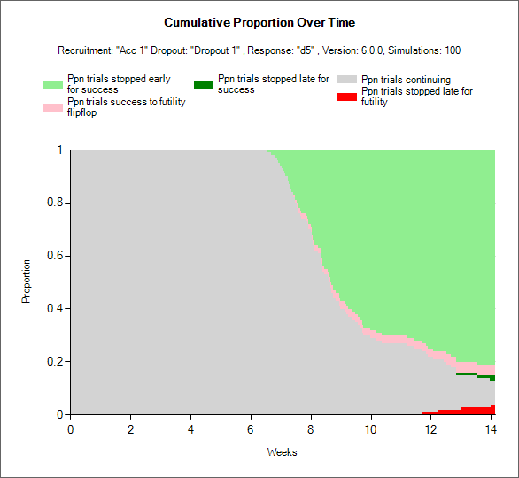

FACTS seamless designs, simulated using the Staged Design Engine, is for simulating trials where there are two stages. The first stage can be a full adaptive trial, the second stage can be a full adaptive trial, and there is a transition that allows for specifying how to transfer from the first stage to the second.
FACTS Staged Design can thus be used to simulate:
A phase II trial followed (possibly seamlessly) by a phase III trial.
A phase IIa trial followed by a phase IIb trial.
A phase II or phase III trial where there is the possibility of a significant change in aim, design, or treatment arms at some point during the trial.
FACTS Staged Design can simulate these successive “stages” as two separate and distinct trials, as a single trial with a significant adaptation at some point, or somewhere on the spectrum between these two where two stages of clinical development are linked sequentially.
The structure of a Staged Design trial is very similar to that of a FACTS Core trial. If you are not familiar with using FACTS Core you should read the FACTS Core User Guide and acquaint yourself with some FACTS Core tutorials. In fact it is recommended you first design the first stage in FACTS Core, then import it into FACTS Staged Design.
The principal difference from a simple Core design is that a Staged Design has, or can have:
Separate designs for each stage with different analysis models, decision rules, and adaptations. For example, a seamless phase II/III design could have an NDLM based dose response analysis across multiple doses for the first stage, but use a simple frequentist analysis to test the response on the sole dose retained into the second stage.
Rules governing the respective sizes of the two stages: these can have fixed sizes; there can be an overall size and the size of the second stage can depend on how early the first stage finishes; or the size of the second stage can depend on the number of arms taken into the second stage.
Timing of the second stage: this can occur immediately when the first stage completes (operationally seamless); there can be a final date for the accrual of the first stage; or there can be a final date for the commencement of the second stage.
Rules governing when the first stage ‘graduates’ into the second stage.
Arm selection rules that govern which of the available arms are to be studied in the second stage.
Data inclusion rules that allow the user to specify which, if any, subjects are included in the analysis of Stage 2.
Allocation rules in the second stage that depend on how many arms were taken into the second stage.
As a result, Staged Designs have more output than a Core Design – there are outputs for both the first and second stage. There can be two sets of outputs for the first stage – one at the time of the arm selection for Stage 2 (or the decision not to graduate), and one at the time of the complete data for the first stage. This is necessary because Staged Designs encompass a range of settings: from simulating what are essentially two separate trials, where the second depends on the first; to simulating a single trial with an interim where there is a trimming of the number of arms being studied.
If the patient data files are written out for the simulation, then there are patient data files for the first stage, second stage and overall.
The FACTS Staged Design (SD) GUI
Note that because there can be a lot of tabs in a FACTS Staged Design, and some of them can be very similar to each other (almost identical tabs occur under “Stage 1 Design” and “Stage 2 Design”), there is a coloring convention: panels that apply to both stages are colored blue, panels that apply to Stage 1 only are colored green and panels that apply to Stage 2 only are colored yellow.
The Study Tabs are for entering the main characteristics of the study and specifying the arms to be tested in the study. This is where the user specifies the ‘given’ requirements, or constraints, of the trial to be designed.
The Virtual Subject Response tabs are for specifying how subjects’ intermediate and final responses should be simulated. This can be done by either specifying the parameters of the response model or by specifying external data files of simulated subject responses from which subjects’ responses are to be sampled. These define subject’s responses given the treatment arm they have been allocated to.
The Execution tabs are for specifying properties of the trial execution that will be simulated: the rate of subject accrual; and the probability of subjects dropping out.
The Quantities of Interest tabs are for specifying the quantities to be calculated during analyses for output in the results, and possible use in adaptive allocation, early stopping and final evaluation decisions.
The Stage 1 and Stage 2 Design tabs are for specifying the statistical analysis to be used in each stage. These are the design choices open to the trial biostatistician and can include: how to model the longitudinal and final responses, what decisions to take at interims and how to determine if a stage, or the overall trial, has been successful. The expected consequences of these design choices will be estimated by running simulations of the trials using the various virtual subject response profiles defined.
The Transition tab is for specifying the “arm selection” rules for selecting the arms to be used in Stage 2, and how the Stage 1 subjects should be used in Stage 2 (if at all).
On the Simulation Tab, the user controls and runs simulations and can view the simulation results.
On the Analysis tab, the user can load an example data set and view the results of the FACTS analysis of that data using the current specified design.
Also on the menu bar, in common with other FACTS engines, on the right hand side of the FACTS Window, is a button labeled “Notes”; clicking this button reveals a simple “notepad” window in which the user can maintain some simple notes that will be stored within the “.facts” file.
Study
The Study tab in the Staged design engine operates very similarly to the Study tab in Core engines using the same endpoint type: Continuous, Dichotomous, Time-to-Event, or Multiple Endpoint.
The following sections largely ignore the portions of the staged user interface that are the same as the core user interface, and focus primarily on the differences.
Study Info
Design Options
In a staged design the “Enable adaptive features” option can be specified separately for Stage 1 and Stage 2. If either stage is not adaptive, then tabs such as interims, early stopping criteria, and adaptive allocation options are not available in that stage.
The “Use Longitudinal Modeling” option works the same as in core.
The “Include simulation of baseline” and “Special longitudinal models” are the same as in FACTS core.
Study Information
Simulate Stage 1 Accrual
In the Staged design engine, subject recruitment for Stage 1 can be simulated continuously or deterministically. If recruited continuously, the user recruitment will be simulated stochastically with a Poisson process, using the parameters specified on the Execution > Accrual tab. Specifying deterministically allows the user to specify a file with subject recruitment dates that will be used for all simulations. Stage 2 accrual can only be continuous.
Maximum Sample Sizes
In staged design, the maximum number of subjects is more complicated than in core designs. Rather than specifying a single maximum, the maximum number of subjects can be specified by stage.
You must either specify the maximum number of subjects combined across both stages, or specify the maximum number of subjects allowed in both Stage 1 and Stage 2. If the maximum number of subjects for a stage is left blank, then there is no maximum for that stage and it is allowed to use all remaining subjects up to the overall maximum.
If the “Maximum number of subjects” is ever reached in a simulation at any stage, then accrual stops. Interim analyses may still be triggered. Existing subjects will be followed up and a final analysis will be performed.
If the “Maximum number of subjects Stage 1” is reached during stage 1, then accrual stops, interim analyses may still be triggered, subjects are followed up, and a decision based on the “Transition” to stage 2 is made.
The “Maximum number of subjects Stage 2” may either be specified as a fixed value, or can “depend on number of treatment arms in Stage 2.” If the “Maximum number of subjects Stage 2” is set, then if the number of subjects accrued in Stage 2 gets to the specified maximum accrual will stop, subjects will be followed up, and the final analysis will be performed. If the maximum number of subjects in Stage 2 is not specified explicitly, but is chosen to depend on the number of arms in stage 2, then the Stage 2 sample size maximum is specified in the Stage 2 Design > Allocation tab.
It is possible to specify rules that allow Stage 1 to use all the allowed subjects. If Stage 2 cannot accrue any subjects and Stage 2 analysis does not include Stage 1 data then it is considered a ‘Null Stage 2’. If some or all Stage 1 data is included in the Stage 2 analysis then Stage 2 immediately completes (after any specified operational delay) with a final analysis just using the Stage 1 data included in Stage2.
The fact that the Stage 2 analysis will be carried out even if Stage 2 has no sample size (if Stage 1 data has been included in Stage 2) creates a useful FACTS trick using staged design. Giving Stage 2 a size of 0 and carrying all Stage 1 data into Stage 2 allows FACTS Staged Design to be used to simulate a FACTS Core design where a different analysis model is to be used for the final analysis (e.g. with a different prior or not using longitudinal modeling).
Maximum time for Stage 1 accrual
The “Maximum time for Stage 1 accrual” can be set instead of or in addition to a Stage 1 maximum sample size. If this option is specified and if, at the specified time Stage 1 has not stopped accruing, then accrual stops, any specified interims continue, and, if specified, subjects are followed to completion.
If the user specifies both a “Maximum number of subjects in Stage 1” and a “Maximum time for Stage 1 accrual” then whichever occurs first triggers the stopping of Stage 1 accrual. If Stage 1 does not stop or graduate at an interim, then after stopping accrual, Stage 1 subjects are followed up and only when all follow-up is complete does the Stage 1 final analysis occur.
Response
The response option for continuous, dichotomous, time-to-event, and multiple endpoint are the same as in FACTS Core.
Schedule of Post-Baseline Visits
If “Use longitudinal modeling” is selected in the Design Options section, then the visit schedule for a patient should be specified in the “Schedule of Post-Baseline Visits” section in the same way as in FACTS Core.
Stage 2 Delay
The value provided in this box creates an operational delay between when arms are selected for inclusion in Stage 2 and the start of accrual in Stage 2.
As in the Core engines, many of the options available for a single endpoint on the Study > Study Info tab have been moved to the Study > Endpoints tab in the multiple endpoints engine.
Design Options
In a staged design the “Enable adaptive features” option can be specified separately for Stage 1 and Stage 2. If either stage is not adaptive, then tabs such as interims, early stopping criteria, and adaptive allocation options are not available in that stage.
The special endpoint options are located in the Study > Endpoints tab.
Study Information
Simulate Stage 1 Accrual
In the Staged design engine, subject recruitment for Stage 1 can be simulated continuously or deterministically. If recruited continuously, the user recruitment will be simulated stochastically with a Poisson process, using the parameters specified on the Execution > Accrual tab. Specifying deterministically allows the user to specify a file with subject recruitment dates that will be used for all simulations. Stage 2 accrual can only be continuous.
Maximum Sample Sizes
In staged design, the maximum number of subjects is more complicated than in core designs. Rather than specifying a single maximum, the maximum number of subjects can be specified by stage.
You must either specify the maximum number of subjects combined across both stages, or specify the maximum number of subjects allowed in both Stage 1 and Stage 2. If the maximum number of subjects for a stage is left blank, then there is no maximum for that stage and it is allowed to use all remaining subjects up to the overall maximum.
If the “Maximum number of subjects” is ever reached in a simulation at any stage, then accrual stops. Interim analyses may still be triggered. Existing subjects will be followed up and a final analysis will be performed.
If the “Maximum number of subjects Stage 1” is reached during stage 1, then accrual stops, interim analyses may still be triggered, subjects are followed up, and a decision based on the “Transition” to stage 2 is made.
The “Maximum number of subjects Stage 2” may either be specified as a fixed value, or can “depend on number of treatment arms in Stage 2.” If the “Maximum number of subjects Stage 2” is set, then if the number of subjects accrued in Stage 2 gets to the specified maximum accrual will stop, subjects will be followed up, and the final analysis will be performed. If the maximum number of subjects in Stage 2 is not specified explicitly, but is chosen to depend on the number of arms in stage 2, then the Stage 2 sample size maximum is specified in the Stage 2 Design > Allocation tab.
It is possible to specify rules that allow Stage 1 to use all the allowed subjects. If Stage 2 cannot accrue any subjects and Stage 2 analysis does not include Stage 1 data then it is considered a ‘Null Stage 2’. If some or all Stage 1 data is included in the Stage 2 analysis then Stage 2 immediately completes (after any specified operational delay) with a final analysis just using the Stage 1 data included in Stage2.
The fact that the Stage 2 analysis will be carried out even if Stage 2 has no sample size (if Stage 1 data has been included in Stage 2) creates a useful FACTS trick using staged design. Giving Stage 2 a size of 0 and carrying all Stage 1 data into Stage 2 allows FACTS Staged Design to be used to simulate a FACTS Core design where a different analysis model is to be used for the final analysis (e.g. with a different prior or not using longitudinal modeling).
Maximum time for Stage 1 accrual
The “Maximum time for Stage 1 accrual” can be set instead of or in addition to a Stage 1 maximum sample size. If this option is specified and if, at the specified time Stage 1 has not stopped accruing, then accrual stops, any specified interims continue, and, if specified, subjects are followed to completion.
If the user specifies both a “Maximum number of subjects in Stage 1” and a “Maximum time for Stage 1 accrual” then whichever occurs first triggers the stopping of Stage 1 accrual. If Stage 1 does not stop or graduate at an interim, then after stopping accrual, Stage 1 subjects are followed up and only when all follow-up is complete does the Stage 1 final analysis occur.
Overall Schedule of Post-Baseline Visits
As in the FACTS Core Multiple Endpoint Study Info tab, the “Overall Schedule of Post-Baseline Visits” tab creates the set of possible visits for observation of any of the endpoints. Each endpoint can be observed only at specific visits based on inputs in the Study > Endpoints tab.
Stage 2 Delay
The value provided in this box creates an operational delay between when arms are selected for inclusion in Stage 2 and the start of accrual in Stage 2.
Design Options
The staged design the “Enable adaptive features” option can be specified separately for Stage 1 and Stage 2. If either stage is not adaptive, then tabs such as interims, early stopping criteria, and adaptive allocation options are not available in that stage.
The “Enable predictor modeling” option in Staged TTE trials works the same as the Core predictor specification.
Study Information
Study and Events
Maximum Sample Sizes
In staged design, the maximum number of subjects is more complicated than in core designs. Rather than specifying a single maximum, the maximum number of subjects can be specified by stage.
You must either specify the maximum number of subjects combined across both stages, or specify the maximum number of subjects allowed in both Stage 1 and Stage 2. If the maximum number of subjects for a stage is left blank, then there is no maximum for that stage and it is allowed to use all remaining subjects up to the overall maximum.
If the “Maximum number of subjects” is ever reached in a simulation at any stage, then accrual stops. Interim analyses may still be triggered. Existing subjects will be followed up and a final analysis will be performed.
If the “Maximum number of subjects Stage 1” is reached during stage 1, then accrual stops, interim analyses may still be triggered, subjects are followed up, and a decision based on the “Transition” to stage 2 is made.
The “Maximum number of subjects Stage 2” may either be specified as a fixed value, or can “depend on number of treatment arms in Stage 2.” If the “Maximum number of subjects Stage 2” is set, then if the number of subjects accrued in Stage 2 gets to the specified maximum accrual will stop, subjects will be followed up, and the final analysis will be performed. If the maximum number of subjects in Stage 2 is not specified explicitly, but is chosen to depend on the number of arms in stage 2, then the Stage 2 sample size maximum is specified in the Stage 2 Design > Allocation tab.
It is possible to specify rules that allow Stage 1 to use all the allowed subjects. If Stage 2 cannot accrue any subjects and Stage 2 analysis does not include Stage 1 data then it is considered a ‘Null Stage 2’. If some or all Stage 1 data is included in the Stage 2 analysis then Stage 2 immediately completes (after any specified operational delay) with a final analysis just using the Stage 1 data included in Stage2.
The fact that the Stage 2 analysis will be carried out even if Stage 2 has no sample size (if Stage 1 data has been included in Stage 2) creates a useful FACTS trick using staged design. Giving Stage 2 a size of 0 and carrying all Stage 1 data into Stage 2 allows FACTS Staged Design to be used to simulate a FACTS Core design where a different analysis model is to be used for the final analysis (e.g. with a different prior or not using longitudinal modeling).
Maximum Number of Events
A Staged Design using a Time-to-Event endpoint can also define study size and stage lengths in terms of the number of events. This can be specified either by overall events, or events by stage. If there is a time-to-event predictor, then the maximum number of events can apply to the Final events or the Predictor events.
The event limits are specified, and work, in largely the same way as the sample size caps specified above.
Again, either the overall max must be set, or both a Stage 1 and a Stage 2 max must be set. If an overall max is set, Stage 1 and/or Stage 2 maxes may also be set.
If a cap is on events in S1, the events cap is respected for Stage 1 and the s1-patients files, but the cap on S1 events can be exceeded on S1 subjects during Stage 2. This will be reflected in the Stage 2 results, the master-patients and s2-patients data files.
If the cap is on overall events and there is no cap on S1, then S1 may complete when the overall event cap is reached, so there is no further data to collect in Stage 2.
If Stage 2 does not include Stage 1 data (specified on the Transition > Data Inclusion tab) and there is no data to accrue in Stage 2 and it is a null stage.
If Stage 2 does include Stage 1 data then a Stage 2 analysis is performed immediately (after any operational delay) on the Stage 1 data. If there is an operational delay and not all S1 subjects are complete then they are followed up until the Stage 2 analysis. This is the one circumstance in which the overall event cap can be exceeded. This will be reflected in the Stage 2 results, the master-patients, and s2-patients data files.
Timing
Maximum time for Stage 1 accrual
The “Maximum time for Stage 1 accrual” can be set instead of or in addition to a Stage 1 maximum sample size. If this option is specified and if, at the specified time Stage 1 has not stopped accruing, then accrual stops, any specified interims continue, and, if specified, subjects are followed to completion.
If the user specifies both a “Maximum number of subjects in Stage 1”/“Maximum number of events Stage 1” and a “Maximum time for Stage 1 accrual” then whichever occurs first triggers the stopping of Stage 1 accrual. If Stage 1 does not stop or graduate at an interim, then after stopping accrual, Stage 1 subjects are followed up and only when all follow-up is complete does the Stage 1 final analysis occur.
Stage 1 follow-up
Maximum subject follow-up is specified in terms of either the maximum follow-up for each subject, or the maximum follow-up beyond the full accrual of the stage.
If the Stage 1 “Max follow-up per subject” is selected and specified, then no subject accrued during S1 will be followed for longer than this. If Stage 1 does not stop early it will stop when every subject recruited has reached their maximum follow-up time or has had an event. With this option all Stage 1 subjects have the same maximum follow-up.
If “Follow-up after Stage 1 full accrual” is selected and specified, then if Stage 1 does not stop early or transition to stage 2 early, then it will stop the specified time after full enrolment or when every subject has had an event. With this option subjects recruited earlier may be follow-up for longer than subjects recruited later in the trial and the overall amount of exposure is maximized.
Stage 2 follow-up
The stage 2 follow-up rules work in the same way as the stage 1 rules. Max follow-up per subjects constrains follow-up so that every subjects has a maximum of the specified amount of exposure. The follow-up after Stage 2 full accrual option allows earlier subjects to be followed for longer, but also guarantees that ever subjects has at least a certain amount of follow-up if Stage 2 does not stop early.
If the maximum follow-up is specified as maximum follow-up beyond full accrual in both stages then it is also possible to specify that Stage 1 subjects are further followed into Stage 2:
if this is not checked then Stage 1 subjects are not followed up after Stage 1;
if this is checked then Stage 1 subjects included in Stage 2 are followed up using Stage 2 follow-up rules. Note that if Stage 1 completes and graduates to stage 2 at the final evaluation (after all S1 subjects have been fully followed up) then all Stage 1 subjects are complete and are not be further followed up in Stage 2, even if they have not yet had an event.
Maximum follow-up is specified separately for each stage and can use different rules and durations.
Visits (Time-To-Event Only)
The details of specifying a visit schedule for a staged time-to-event trial are identical to the same tab in the FACTS Core User Guide. The visit schedule specified here is shared across both stages.
Treatment Arms
Treatment arms in staged designs are specified in the same way as in the FACTS Core engine.
In the stage design engine it is common to make decisions leading to not randomizing subjects to particular arms in Stage 2, so it is worth noting that all treatment arms are included in analysis models in both stages of the trial regardless of whether they have been allocated to or not.
This results in treatment arms that are not accruing subjects having estimated QOI values. It can even lead to doses with no subjects allocated to them have a high probability of being the dose with the maximum response or being a minimally efficacious dose.
In Stage 2 there is an option (on the Transition > Data Inclusion tab) to restrict the estimation of Target QOIs (such as Pr(Max) and Pr(MED)) to those arms that were selected for inclusion in Stage 2.
Note that doses that have not been allocated to will have an estimated response based on the prior and the dose response model being used.
For dose response models with parametric relationships on the dose strength, like Hierarchical Logistic or Sigmoid/E-max models, the estimates may still be relatively precise depending on how well the curve can be estimated from the doses for which data has been gathered.
For dose response models that are not parameterized based on the effective doses strength, like the independent dose model, the estimate of response are likely to have high degrees of uncertainty.
For the complex shape models like “Plateau” and “Inverted U”, even though these are parameterized with respect to the effective dose strength, different parameters estimate the curve for different dose zones, and little information is shared across the dose zones. So, certain parameters may exibit high uncertainty depending on the doses that have not been allocated to. If only a small proportion of the doses have not been allocated to, then these models may function like the parametric response models.
If only a few doses are being allocated to in Stage 1, or there is a need to estimate the Target QOIs over the whole dose range in Stage 2. It is worth considering creating decision QOI’s based on specific doses that the design guarantees subjects have been allocated to. (E.g. if in Stage 1 subjects are only allocated to Control and the Top Dose, then create a decision QOI where the evaluation dose is explicitly the top dose for making end of Stage 1 decisions).
Variants
On this tab the user can specify that a number of design variants should be created. Each variant is a slightly different design that can be simulated on all created simulation assumption scenarios.
For Staged Continuous, Dichotomous, or Multiple Endpoint trials, the only design feature that can be changed is the sample size (maximum number of subjects). The overall maximum, maximum for stage 1, and maximum for stage 2 can be varied, and the same rules as on the Study > Study Info tab apply in the variants.
In the Staged Time-to-Event engine, the maximum umber of subjects can be set, but the maximum number of events can be set as well. Again, the maximum number of events can be set overall or for one of/both stages of the design. The same rules as on the Study > Study Info tab apply in the variants.
The user enters the number of variants they wish to create. Then in the resulting table, enter different “Maximum Subjects” for each variant. On the simulations tab FACTS will then create a copy of all the scenarios to run with each variant.
Endpoints
As with the FACTS Core Multiple Endpoint design Endpoints tab, the staged design Study > Endpoints tab allows for specification of the number, type, and individual properties of the different endpoints. The details of this tab are identical to the Core design, except it is now possible to define the utility function per stage.
The Component utility combination method now has a drop down for each stage to specify how the endpoint utilities are to be combined to create the component utility. The Utility Function section has a Stage 1 tab and a Stage 2 tab with identical tables to enter the parameter coefficients for the endpoint utility calculation. Clicking the “Mirror Stage 1 data in Stage 2” option deactivates the Stage 2 utility table for the endpoint and will use whatever is entered on the Stage 1 utility tab for Stage 2.
Virtual Subject Response
Virtual Subject Responses, both final response and longitudinal response, are specified in Staged Design in exactly the same manner and with the same options as in FACTS Core Design for the same endpoint.
Note that the same VSR profiles are used for both stages. If you would like to simulate a trial with different endpoints or responses in the two stages, use FACTS Staged Design with Multiple Endpoints, and use QoIs based on different endpoints in the two stages.
Execution
Accrual
The simulation of “Continuous” accrual and “Deterministic” accrual are done in the same way as in FACTS Core, but there is a little bit more to specify in the Staged design engine.
Accrual can be specified in three ways:
- With a single, common accrual profile that applies across both stages. In this situation, there is no break in recruitment between stages and regions do not ramp up a second time in the second stage. Regions’ start dates can be delayed so that they are likely to only participate in the second stage but, given the stochastic simulation of the recruitment and possibly uncertain timing of the end of the first stage if it is adaptive, under this option there is no certain linkage between the accrual rate and which stage the trial is in. This option is best used when the accrual is independent of the stage.
With two separate profiles - one for each stage. If the profiles are similar, there is a control that can be used to copy the details of Stage 1 to Stage 2. Unlike the “mirroring” option on some of the design tabs, this does not link the Stage 2 profile to the Stage 1 profile, it simply replaces the current Stage 2 profile with a copy of the curernt Stage 1 profile.
With this option, the accrual in Stage 2 starts again from the beginning of the Stage 2 profile as if the start of Stage 2 is time 0 (for ramp-up, for example). All dates in the Stage 2 profile are relative to the start of Stage 2.
- If “Determinisically” was selected for “Simulate Stage 1 Accrual:” on the Study > Study Info tab, then the Stage 1 accrual gets its own tab that is exactly like the Core Design Deterministic Accrual tab for the Stage 1 accrual rate. The Stage 2 accrual profile is always Continuous, and is specified in the normal manner.
Dropout
Dropouts are specified in Staged Design in exactly the same manner, and with the same options as in FACTS Core Design for the same endpoint.
Note that dropouts can either be simulated identically for both stages, or separate drop out patterns can be specified for each stage:
A subject’s drop out probabilities are determined by the Stage they are recruited in, thus a subject recruited in Stage 1 but followed up in Stage 2 will continue to have the Stage 1 dropout probabilities even though Stage 2 has now started.
In case a complex dropout pattern has been specified (i.e. with per arm per visit probabilities) there is an option to copy the Stage 1 dropout parameters to Stage 2. This does not link the inputs, just copies the Stage 1 values into the Stage 2 entries.
Quantities of Interest (QoIs)
With only a few exceptions, the specified Quantities of Interest are common across both Stage 1 and Stage 2, but separately estimated based on the data and statistical models in each stage. The common QoIs are specified in exactly the same way as in FACTS Core.
The exceptions are in the Staged Design Predictive Probability QoIs and Conditional Power QoIs, which introduce new phases to account for the different stages:
“Future Trial”: this is the same as the “Future Trial” predictive probability or conditional power in FACTS Core and is available in both stages.
“Stage 1” and “Stage 2 Current”: these are the same as the normal “Current Trial” predictive probabilities/conditional powers in FACTS Core. They are only calculated for the respective stage and estimated in terms of the probability of success of that stage at the specified alpha level and using the default p-value delta (it is up to the user to specify an equivalent p-value QOI, and test it at that alpha level as the final success/futility criteria, FACTS does not check for, or enforce, consistency). If calculating the predictive probability or conditional power of an arm at the end of the current stage 2 and the arm did not transition to stage 2, the arm will be given a predictive probability or conditional power of
- If calculating the predictive probability or conditional power at the end of Stage 1 Current, and the trial is already in Stage 2, all arms will be given QOIs of -9999.
“Stage 2 Future”: this predictive probability/conditional power is unique to Staged Design. It is only estimated in the first stage, and is estimated in terms of the probability of success at the end of the second stage. Due to the unconstrained nature of the proposed staged design for Stage 2, these predictive probabilities/conditional powers do not attempt to account for all details of the set-up for Stage 2:
Adaptive allocation, early stopping rules, and dropout behavior in Stage 2 are ignored. The predictive probability or conditional power is based on a statistic computed for the maximum sample size of Stage 2, divided evenly amongst the number of arms specified to be going to Stage 2.
Stage 1 data usage as specified on the Transition > Data Inclusion tab is incorporated. If the analysis includes Stage 1 data in Stage 2, then the current Stage 1 data is used – i.e. the calculation assumes the trial graduates right at the time of calculation.
If the Stage 2 sample size depends on when Stage 1 graduates, it is assumed that the trial graduates at the time of calculation.
The user specifies in the QoI definition the number of arms assumed to have been taken into Stage 2.
When defining decision QOIs for use in Stage 2, and only one or two arms are being selected for inclusion in Stage 2 it is not immediately obvious how to specify the Evaluation Dose when what is wanted is “the arm that’s been included in Stage 2”. However, achieving this is fairly straightforward: first, in the QOI use the Greatest Pr(Max), or dose with the Maximum probability (or Minimum probability if using a p-value QOI), and on the Transition > Data Inclusion tab ensure that under “Min and Max Decision QOIs and Target QOIs are selectable from” the “only arms selected for Stage 2” option is selected.
Stage 1 Design
The Stage 1 Design tabs allow the user to specify how the data in Stage 1 will be analyzed, how subjects will be allocated, when the data will be analyzed and the decisions that will be taken on that analysis. The content of these tabs are mostly the same as for FACTS Core; differences are detailed in the following subsections.
These tabs are all identical between the FACTS Core engine and the Staged engine:
Mirroring functionality
New checkboxes are available to the analysis model tabs: “Dose Response” and “Longitudinal Model” - to allow Stage 1 design data to be ‘mirrored’ in Stage 2. When mirrored, the Stage 2 data is ‘locked’ to that of Stage 1 – i.e. it is disabled and is synched to be an exact copy of Stage 1 data - updating automatically when this data changes. If the mirror is then switched off, the Stage 2 data becomes a copy of the Stage 1 data, but can now be edited to change it specifically for Stage 2.
In Staged Design with a Time-to-Event endpoint, the option to mirror the Stage 1 design in Stage 2 is also present on the TTE specific tabs: “Predictor Model > Dose Response”, “Predictor Model > Relationship to Endpoint” and “Hazard Model”.
Note, mirroring of Dose Response and Hazard Model data which has hierarchical priors defined, will also lead to the related hierarchical priors data being mirrored (i.e. on the separate “Hierarchical Priors” tab).
Stage 1 Interims
The Stage 1 interims have the same facilities (in “Interim Analysis Frequency”) for defining interims as FACTS Core.
The “Subject Followup Options” has been renamed to “Subject Follow-up Options After Early Decision” and has 1 new option. Otherwise it is the same as FACTS Core. The new option is whether or not to “continue follow-up after interim graduation”. If selected, this option says that if Stage 1 “graduates” (passes the decision criteria to go to Stage 2) at an interim (not the final evaluation when every subject would be complete), then we continue to follow-up the Stage 1 subjects who are not complete. Checking this option enables three further options:
Specify a delay between graduating at an interim and making the arm selection for Stage 2 and starting accrual. The options are:
Wait until all Stage 1 subjects have completed.
Wait a fixed additional time (or until all Stage 1 subjects have completed, whichever occurs first).
No delay
Request an additional analysis of the Stage 1 data after all Stage 1 subjects are complete. This is referred to as a Complete Data Analysis (CDA). This CDA would be assessed using the final evaluation criteria.
- If a CDA is requested, by default the output of the Stage 1 patients data will be as at the Stage 1 CDA. If instead you want the patients data to be output as it was at the Stage 2 arm selection analysis, select the “Censor s1-patientsXXXX data as at arm selection” option.
On the “Transitions > Data Inclusion” tab it will be possible to select from various options to use Stage 1 data in the Stage 1 analysis. If “continue follow-up after interim graduation” is not checked only the “not used” option will be available.
Stage 1 Allocation
Specification of Stage 1 allocation is identical to FACTS Core, except that using Arm Dropping in Stage 1 has some consequences that are unique to Staged Design:
At Stage 2 Arm selection, regardless of the arm selection rules, an arm dropped in Stage 1 cannot be selected for Stage 2.
As a dropped arm cannot be selected for Stage 2, if the data inclusion option only includes subjects on arms kept in Stage 2 then the subjects on a dropped arm will not be included in Stage 2... However if the Stage 1 data is included in full, or included in full and pooled then data from completed subjects on a dropped arm are included in Stage 2.
If a Subject is on an arm that is dropped, and then the Study stops for Success/Futility the subject only continues to be followed up if both “Continue follow up if arm dropped” has been selected and the appropriate “Continue follow-up if study stopped for success/futility” has been checked.
As noted in the Stage 2 section on Allocation below, Arm Dropping is not available as an allocation adaptation in Stage 2.
Stage 1 Success/Futility/Graduation Criteria
The Success/Futility/Graduation tab works in the same way as the Success/Futility tab in FACTS Core. For adaptive designs, the user can specify criteria for stopping in Stage 1 at an interim, and can define different criteria for different interims. Interim’s are indexed 1, 2, 3 etc. If stopping criteria are specified for an interim, they apply to all subsequent interims until there is an interim with new criteria specified. For example if stopping criteria are specified for Interim 1 and Interim 4, then at Interims 2 & 3, the stopping conditions for Interim 1 are used. The decision criteria for the final evaluation are always specified separately.
In a Staged Design, in additional to stopping Stage 1 for Success or Futility, it is possible to decide to stop Stage 1 in order to graduate to Stage 2. The decision criteria are checked in the order: ‘Futility’, ‘Success’, and then ‘Graduation’. The first criteria that are met are acted on. Note that deciding that Stage 1 is a Success or is Futile prevents Stage 2 from running, Success or Futility is a trial level decision.
Stage 1 Decisions
The possible outcomes for Stage 1, called “Outcome” in the Stage 1 output files, can be divided into 13 possible distinct decisions. Each simulated staged design makes a stage 1 decision that falls into exactly one of these categories. The outcomes reported for stage 1 do not depend on the decision made in Stage 2. They are fixed an known at the time of initiation of the second stage of the trial. The possible decisions are as follows:
Trials that stopped in Stage 1
- 1. Stage 1 Early Success
- Stage 1 Early Success is achieved if and only if the trial meets the success condition at an interim analysis during Stage 1, and does not meet the futility criteria at the Stage 1 final analysis. The final analysis futility criteria must not be met whether or not subjects were selected to follow-up after an early success decision in Stage 1.
- 2. Stage 1 Late Success
- Stage 1 Late Success is achieved if and only if the trial enrolls to the maximum Stage 1 sample size, collects full follow-up on Stage 1 subjects, and then meets the Stage 1 final analysis success criteria.
- 3. Stage 1 Late Futility
- Stage 1 Late Futility is achieved if and only if the trial enrolls to the maximum Stage 1 sample size, collects full follow-up on Stage 1 subjects, and then meets the Stage 1 final analysis futility criteria. Stage 1 Late Futility is not the complement of Stage 1 Late Success since the decision made if neither Late Success nor Late Futility are achieved at the Stage 1 final analysis is to graduate to Stage 2.
- 4. Stage 1 Early Futility
- Stage 1 Early Futility is achieved if and only if the trial meets the futility condition at an interim analysis during Stage 1, and does not meet the success criteria at the Stage 1 final analysis. The final analysis success criteria must not be met whether or not subjects were selected to follow-up after an early futility decision in Stage 1.
- 5. Stage 1 Success to Futility Flip-Flop
- Stage 1 Success to Futility Flip-Flop is achieved if and only if the trial meets the success condition at an interim analysis in Stage 1, but meets the futility condition at the Stage 1 final analysis. Success to Futility Flip-Flops can be achieved whether or not subjects are followed up after the early success decision in Stage 1.
- 6. Stage 1 Futility to Success Flip-Flop
- Stage 1 Futility to Success Flip-Flop is achieved if and only if the trial meets the futility condition at an interim analysis in Stage 1, but meets the success condition at the Stage 1 final analysis. Futility to Success Flip-Flops can be achieved whether or not subjects are followed up after the early futility decision in Stage 1.
Trials that graduated in Stage 1
- 8. Early Graduation
- Early Graduation is achieved if and only if the trial graduates at an interim analysis in Stage 1 and successfully chooses at least 1 active arm to carry forward into Stage 2.
- 9. Late Graduation
- Late Graduation is achieved if and only if the trial enrolls to the maximum Stage 1 sample size, collects full follow-up on all Stage 1 subjects, graduates at the Stage 1 final analysis, and successfully chooses at least 1 active arm to carry forward into Stage 2.
- 10. Early Graduation, None Selected
- Early Graduation, None Selected is achieved if and only if the trial graduates at an interim analysis in Stage 1, but no active arms meet the criteria for moving to Stage 2. In this case, Stage 2 is considered “Null” and is not performed.
- 11. Late Graduation, None Selected
- Early Graduation, None Selected is achieved if and only if the trial enrolls to the maximum Stage 1 sample size, collects full follow-up on all Stage 1 subjects, graduates at the Stage 1 final analysis, but no active arms meet the criteria for moving to Stage 2. In this case, Stage 2 is considered “Null” and is not performed.
Outcomes Specific to the Complete Data Analysis
If the option to “Perform Stage 1 complete data analysis” is checked in the Stage 1 Design > Interims tab, then after an early graduation decision is made in Stage 1, the complete data analysis is conducted after full information is collected on all subjects enrolled during Stage 1. The complete data analysis row is recorded in the Stage 1 weeks files in the row with Interim Number equal to 1000. This row is distinct from the rest of the trial operation, and is not truly an interim analysis at which a trial decision can be made.
The special decisions, beyond the first 6 decisions that can be made for a trial that stops early in Stage 1, are:
- 15. Early Graduation, Complete Data Analysis Futility
- Early Graduation, Complete Data Analysis Futility is achieved if and only if the trial graduates at an interim analysis in Stage 1, and meets Stage 1 final futility criteria at the complete data analysis after full follow-up on subjects accrued during Stage 1 is collected.
- 16. Early Graduation, Complete Data Analysis Success
- Early Graduation, Complete Data Analysis Success is achieved if and only if the trial graduates at an interim analysis in Stage 1, and meets Stage 1 final futility criteria at the complete data analysis after full follow-up on subjects accrued during Stage 1 is collected.
- 17. Early Graduation, Complete Data Analysis Inconclusive
- Early Graduation, Complete Data Analysis Inconclusive is achieved if and only if the trial graduates at an interim analysis in Stage 1, and does not meet the Stage 1 final futility or Stage 1 final success criteria at the complete data analysis after full follow-up on subjects accrued during Stage 1 is collected.
Decisions 15, 16, and 17 are unique to the complete data analysis, and cannot occur at a regular interim analysis or a final analysis.
Creating Decision Criteria
As in FACTS Core, each decision can be specified in the following manner:
First the decision is enabled / disabled if that outcome can / cannot be determined at that analysis.
Secondly the “Decision QoI” to base the decision on, the direction of comparison, and the threshold to compare against are specified.
Multiple “Decision QoI”s with their own comparisons may be specified as well as whether the test is for them all to be met (the criteria combined by AND) or for any one of them to be met (the criteria combined by OR).
Finally, a minimum amount of information can be specified – either overall or on a specific arm. The nature of the information – Subjects Enrolled, Subjects Complete, or Subjects with the Opportunity to Complete is the same as has been selected on the Interim tab to define interim timings.
Specifying the Stage 1 Design’s Final Evaluation criteria is slightly different in staged than the Final Evaluation tab in Core:
There are no minimum information criteria, because it’s the final evaluation no further information will be gathered.
There are no graduation criteria. Graduation is the automatic decision if neither te Final Success Criteria or Final Futility Criteria are met.
There is a pit-fall that catches some users off guard when they are trying to design an inferentially seamless trial in the Staged design engine. A common staged design is one in which you would like to enroll a set number of subjects in Stage 1, and then transition to Stage 2 and seamlessly start enrolling Stage 2 with no pause. It seems logical that you could just not specify any interim graduation rules, and let the trial graduate at the final evaluation and start Stage 2. This would even seem to work on first glance.
The commonly unexpected issue is that the Final Evaluation Success/Futility/Graduation Criteria are not assessed until all accrued Stage 1 subjects have had the chance to observe their full follow-up. This means that if there is a long time to endpoint, that the trial will sit still and not accrue any new subjects for the length of the endpoint time. Additionally, when the study does transition to stage 2, it will have complete data on all Stage 1 subjects, so an early adaptation in Stage 2 may have more data to work with than intended.
To design an inferentially seamless trial, you must conduct an interim analysis at the time that the final Stage 1 subject is accrued, and you should set up the graduation rule at that interim analysis so that it is always met.
Early graduation at an interim analysis always transition seamlessly to the next stage as long as “Stage 2 Delay” is 0 on the Study > Study Info tab, and the wait time before Stage 2 dose selection is set to “No Delay” on the Stage 1 Design > Interims tab.
Transition
The transition rules cover two aspects of how the results of Stage 1 can be used to determine what happens in Stage 2:
Which dose / treatment arms to select for use in Stage 2; and
Which Stage 1 data to include in the Stage 2 analysis population
Note that in this section the terms “dose” and “arm” should be read interchangeably.
Dose selection
There are two different forms of arm selection available: “Standard Selection Logic” and “Representative Arm Logic”. Independently of these, there are simple selections as to whether the Control and Active Comparator (if present) arms are to be included in Stage 2.
The same set of treatment arms are available in Stage 1 and Stage 2: these are the arms defined on the Study > Treatment Arms tab. Usually all arms are available in Stage 1, but, if using fixed allocation in Stage 1, it is possible to assign zero subjects to an arm. This arm will still be included in analysis, however.
It is quite possible that, after a successful graduation decision (either at an interim in Stage 1 or at Stage 1 final analysis), the defined arm selection rules select no arms. This leads to a ’Null” Stage 2, i.e. Stage 2 does not run and overall the result of the combined stages is futility.
In outline, the two arm selection methods are as follows:
Standard Selection Logic: This provides three levels of decision logic that are applied in turn to select:
individual specific arms to be kept or dropped;
arms identified as specific “Target” arms are kept;
arms that have scored highest or lowest on specified QoIs to be kept or dropped, with a specified minimum or maximum number of arms to be kept or dropped.
Representative Arm Logic: This provides the ability to place the different treatment arms in different groups and then apply one of three forms of decision logic:
Keep one from each group
Keep groups based on the performance of each of the ‘representative arms’ from each group
Keep just one group based on the performance of the ‘representative arm’ from each group.
Standard Selection Logic
When using “Standard Selection Logic” for the arm selection criteria, there are 3 levels of rules that are applied in order. It is not necessary to specify rules at each level; indeed if the selection you require can be achieved by a single rule at one particular level, that is usually the best way to specify it.
Individual Dose Decisions
The Individual Dose Decisions level is applied first. At this level the rule can be very simple: select a specific treatment arm, and specify a rule that decides if it should be kept or dropped. The rule can also be made dependent on a QoI achieving a particular threshold. Use this level of rules when you want to keep or drop specific arms.
When adding an Individual Dose Decision, the rule is made up of:
The specific arm the decision applies to.
Whether the decision is to Keep or Drop the arm.
The decision criterion to use. Note this is optional and used to build more complex rules. Multiple criteria can be specified for each arm by adding new rules targeting the same arm. Each criterion is made of:
The “Decision Quantity” QoI to be tested. Often this will require a decision QoI to be created that is the evaluation of a QoI at the arm in question (but it could be a QoI at a different arm– e.g. keep the top dose if the middle dose has not met its criteria to be kept).
The direction of comparison.
The threshold.
Whether, if additional criteria are specified, they are combined with a logical “AND” or a logical “OR”. This has to be specified on the first criteria for a particular arm, even if no other criteria are specified. When subsequent criteria are specified for the arm the join condition is displayed, but cannot be changed. To change the criteria, edit the first criteria for the arm.
Target Dose Decisions
The second level of rules to be applied is “Target Dose Decisions”. The rules defined at this level are a simple selection from the list of available “Probability of being Target” QoIs (such as Pr(Max), Pr(MED), etc), and the arm that has the highest probability of meeting that target criteria is kept.
All Dose Decisions
The final level of rules to be applied is “All Dose Decisions”, so called because the rule is applied to all the arms.
These rules comprise:
A selection of whether these are rules to Keep or Drop arms.
The Minimum and the Maximum number of arms to Keep or Drop. Note that this minimum and maximum takes into account the number of arms kept or dropped by the rules at the earlier levels, and does not overrule them. For example: if the level 1 & 2 rules have caused 3 arms to be kept and the maximum is specified here to be 2, the number of arms kept is not reduced to 2, but no further arms, no matter how many meet this rule will be kept. Conversely if the previous levels have not caused any arms to be kept and the minimum is specified here to be 1, then 1 arm will be selected for keeping even if it does not fully meet the criteria.
The QoI to be used for the sort criterion is specified and the sort priority. The arms will be sorted by their value of this QoI when being tested against the additional criteria below.
There is no way to not specify a sort criterion, if the desire is that this rule should not be used to keep or drop doses, then the “minimum to keep” and “maximum to keep” should be set to 0.
A filtering criteria can be specified using an “All Dose QOI”, condition and threshold. All arms will be judged using these criteria, and only those meeting the criteria will be selected as candidates. Multiple criteria may be specified, and the user selects whether these are combined with a logical ’AND” or a logical ’OR”. If no filtering criteria are specified then all the undecided arms are candidates.
If the already decided arms plus the candidates sum to more than the maximum arms being selected, then the candidate arms will be selected in order using the sort criteria up to the maximum.
If the already decided plus the candidate sum to less than the minimum required arms being selected, then additional arms will be selected from the remaining non-candidate arms in order, using the sort criteria, up to the specified minimum.
If the sum of the already decided arms plus the candidates lies between the specified minimum and maximum (inclusive) then no additional arms are selected, and the sort order is not required.
If no criteria are specified, then arms are simply selected in sort order.
Decision Summary Tab
To simply the task of checking the rules that have been specified, there is a summary tab which describes the Selection Logic that has been specified.
Representative Arm Logic
The Representative Arm Logic method of specifying the arms to be selected for Stage 2 can be used when the selection needs to treat the arms as belonging to different groups, for example high and low doses or the treatment given in isolation or given in combination.
The tab allows the user to specify sub-groupings of the arms:
- The number of groups is specified, initially with all the arms placed in “Group A”. Incrementing the “Group Count” parameter will create some additional empty groups – up to a maximum of four groups:
- The treatment arms can then be moved between groups by simply dragging them, and the arms can be ordered within groups again by dragging them:
- The top arm within each group is the default “representative arm” for that group for decision purposes (referred to below as the “Pre-selected Top Dose”). The arms can be dragged and reordered within groups to change the default representative.
When selecting doses between doses that have the same value for the QOI (which is highly unlikely except in circumstances where the value is ‘1’) in the Representative Arm logic, as elsewhere in FACTS, the lowest dose ‘wins’. Thus, if “keep one from each group” is being used and all the doses in a group are tied on the QOI criterion, the lowest dose in the group will be selected. If “keep one group” is being used and the representative doses of the groups are tied on the QOI criterion, then the group with the lowest representative dose will be selected.
There are three different “Representative Arm Logic” decision methods that can be used – as described in the following subsections.
Keep one from each group
When using Keep One From Each Group logic, the sub-groups are arranged with the intention to keep one arm from each group – selected according to specified criteria.
At least one criterion, comprising of an “All Dose” QoI with a condition and a threshold, is specified; this is taken as the primary decision to filter on and is used to sort the arms in each group. The direction of the condition determines the priority order of the QoI. Note the threshold can be set to 0 or 1 if no criterion is required. Additional criteria can be defined to refine the selection filter – and these are combined using a logical ‘AND’ or an ‘OR’. For each group, the arms that meet the criteria are selected, and (if there are multiple) the arm with the greatest (if the Condition is ‘>’) or lowest (if the Condition is ‘<’) value from the primary (first) criteria is selected as the arm from that group.
If no arms meet the criteria, then the arm with greatest/lowest value from the primary QoI is selected.
Keep group based on representative
When using Keep Group Based on Representative Arm logic, the user specifies how a representative arm in each group is selected and criteria to filter these representative arms; then all the arms in groups whose representative arm satisfies this filter are selected.
The user first specifies how the representative arm in each group is selected, this can either be:
The Pre-selected Top Dose: the arm that the user has moved to the top of the list, per group, in the Group Builder panel.
Any Target QoI (such as Pr(Max)), in which case the arm in the group that has the greatest probability of being that target arm is the representative for that group.
Criteria are then specified in the same manner as for the “Keep One From Each Group” logic. These criteria are applied to the representative arm of each group. If the criteria are met, all arms for that group are retained.
Keep one group
When using Keep One Group logic, the user first specifies how the representative arm in each group is selected, this can either be:
The Pre-selected Top Dose: the arm that the user has moved to the top of the list, per group, in the Group Builder panel.
The Sum: the greatest summed value of an “All Dose” QoI for all the specific arms in the group (e.g. pick the group with the overall greatest probability of having the maximum response, rather than the arm with the probability of having the maximum response).
Any Target QoI (such as Pr(Max)): the arm in the group that has the greatest probability of being that target arm is the representative for that group.
The user then specifies the selection QoI, which can be any of the “All Dose” QoIs (excluding the target QoIs – unless using Sum). The user then specifies the Priority Order as “Least” or “Greatest”. The group selected will be the group where the representative arm has the Greatest / Least value for the specified QoI.
Data Inclusion
On the Data inclusion tab, the user specifies how much Stage 1 data is used in the Stage 2 analysis. The options are:
not used: Stage 1 data is not used at all in Stage 2. The two stages are effectively separate trials.
included in full: All Stage 1 data is used in Stage 2. The two stages are effectively 2 parts of a single trial.
included where the subjects are on arms that are kept in Stage 2: Stage 1 data is used in Stage 2, but just on the arms selected for Stage 2. This could be for example for an inferentially seamless phase 2/3 trial.
included in full and pooled with the one Stage 2 treatment arm: Stage 1 data is used in full, but pooled onto the one treatment arm selected for Stage 2. This option is only available when the selection criteria can clearly only take one arm into Stage 2.
restricted to only those subjects that did not complete in Stage 1 and are on arms that are kept in Stage 2: Only incomplete Stage 1 subjects on arms that are selected for Stage 2 are used in the Stage 2 analysis. The user specifies what is the latest visit the user can have been observed at and still count as “incomplete”. Whether the visit was observed in stage 1 is judged at the Stage 1 Dose Selection analysis. This option is not available for designs using a TTE endpoint.
The user also specifies whether in Stage 2 “Target QoIs” are evaluated over all the arms in the trial or just over the arms selected for Stage 2. “Target QoIs” are QoIs such as Pr(Max) that calculate for each arm the probability that it meets some target criteria.
Regardless of whether and how Stage 1 data is used in Stage 2, all Stage 1 data is always used in the Stage 1 analysis.
Stage 2 Design
The Stage 2 Designs tabs, like the Stage 1 Design tabs, are very similar to the Design tabs in FACTS Core. The differences are outlined in the following subsections.
Dose Response Modeling
The dose response modeling in Stage 2 is applied to all doses, regardless of whether they have been selected for inclusion in Stage 2 or not. Unless all Stage 1 data is included in Stage 2, if only a small portion of all doses are included in Stage 2, then the Independent Dose Model should be considered for the dose response analysis, along with the option on the Data Inclusion tab to restrict the estimate of Target QOIs to only the arms selected for use in Stage 2.
For more on this discussion, see above.
Allocation
In Stage 2 of a staged design, there are only 2 allocation options: fixed and adaptive. There is no “arm dropping” option, because of the difficulty of specifying arm dropping rules when the number of arms starting out can vary.
Fixed Allocation
Fixed allocation in Stage 2 is specified in the same way as FACTS Core and Stage 1: allocation is blocked, and the user specifies the number of times each treatment occurs in the block (and hence the block size). The difference in Stage 2 is that the exact number of treatment arms may be uncertain, depending on the arm selection rules and the data available at the time of arm selection.
Thus, in Stage 2, rather than a single set of randomization weightings, fixed allocation is defined for each of the possible numbers of treatment arms taken to Stage 2 (but not on exactly which arms are taken, only the number taken).
FACTS displays a table with a row for each potential number of arms in Stage 2 and the user can assign weightings to each one. Arms are identified in terms of their relative “Effective Dose Strength”. Trt 1 refers to the treatment arm selected for Stage 2 with the lowest effective strength, Trt 2 the next lowest, etc. Effective dose strength for each arm can be entered on the “Study > Treatment Arms” tab. Hence if the 2nd, 3rd and 5th arms are selected they will receive the allocation of “Trt 1”, “Trt2” and “Trt 3”, on the “possible # treatments = 3” row.
In the example above, the assignment to control has been changed from the default of ‘1’ to maintain a 50% allocation to Control in each of the possible settings, of whether 1, 2, or 3 treatment arms were selected for Stage 2.
Note, the number of arms available to allocate to (i.e. the number of rows in the table) is dictated by the settings on the “Arm selection” tab – e.g. if using Standard Selection Logic with a min and max number of arms to keep of ‘3’ (and more than three arms are defined), there will be three rows in this table.
Adaptive Allocation
If using adaptive allocation in Stage 2, there are two sets of allocation data to define:
The lower table in the tab defines the fixed allocation that occurs prior to the first Stage 2 interim analysis. This is specified in the same way as for fixed allocation (see the section above).
The upper table in the tab specifies which arms are adaptively allocated to after the first Stage 2 interim, how many slots there are in the randomization block, which arms are allocated with a fixed number of slots in the block, and hence how many slots are left over to be allocated adaptively. To allocate to an arm adaptively, no value should be entered in the cell, and the cell will turn orange. Note, the first row must have all values defined, whereas other rows, if they are to be specified adaptively, must have at least two empty cells. The table is laid out in the same way as the table for fixed allocation, with a row for each number of treatments that might be selected for Stage 2, and then the columns for the arms in Stage 2 ordered by their effective strength.
The adaptive allocation targets section is completed in the same way as in the FACTS Core design Adaptive Allocation tab. If static weights are assigned to arms, then the weighting is normalised across just those arms that have been selected for Stage 2 and are being adaptively allocated. To put it another way, arms that have not been selected for Stage 2 or are selected but have been given a fixed allocation are excluded from the static weighting scheme, the weighting is then re-normalized across those doses that are left.
Note that, because in Stage 2 it is usually not known at design time which doses will be in Stage 2, nor often how many, the static weight table does not disable entries for doses that may not be present in Stage 2.
Interims
Interims are specified in the Stage 2 design in the same way as FACTS Core and Stage 1, except in Stage 2 there is an option to specify whether the Stage 2 information requirements are based solely on Stage 2 data, or on the Stage 2 plus Stage 1.
Note that the interim numbers in Stage 2 “start over” after the transition. So the interim numbers written to the stage 2 “weeks” file will start at 1, and will correspond to the interim decisions specified on the Success/Futility Criteria tab.
Interim timing in the second stage may be affected by the presence of first stage data, if the option is selected to base interim information on both the first and second stage data. In this case, interims are handled as follows:
If interims are specified by time, then the “first interim” may be skipped if the information carried forward from the first stage exceeds the amount of information specified for the “first interim.” The “Interim 1” success/futility criteria are then ignored, and would be superceded by the “Inteirm 2” success futility criteria, if they exist. The initial analysis is performed at X weeks into the second stage, according to the first “Time: every X weeks” specification that occurs after Stage 2 starts.
If interims are specified by time, and the first interim is by number of subjects enrolled the “first interim” condition may never be reached (particularly in a Stage 2 where the amount of information can be very dependent on when Stage 1 graduates to Stage 2). In this instance the timed interims start at full accrual.
If interims are specified by information, then the first interim performed is the first interim that has information greater than the information available from the first stage data. Interim numbering still corresponds to the rows of the “Information at” specifications.
Success/Futility Criteria
In Stage 2 the “Success/Futility Criteria” tab is laid out as in FACTS Core. It differs from the Stage 1 Design > Success/Futility/Graduation Criteria tab in not having any graduation criteria conditions.
See the Stage 2 Interims tab description for specific details on Success/Futility rule assessment if interims are unattainable or already attained at the start of Stage 2.
The Staged Design Decisions for Stage 1 and Stage 2 Combined
The decisions that can be made in staged designs, called Comb. Outcome in the output files, are expanded to accomodate the two stages. Instead of the 7 possible outcomes in a single stage FACTS Core design, there are more available in the staged engine. Every possible combination decision that can be made in a FACTS Staged designs falls into exactly one of 23 possible decisions. They are as follows:
Trials that stopped in Stage 1
- 1. Stage 1 Early Success
- Stage 1 Early Success is achieved if and only if the trial meets the success condition at an interim analysis during Stage 1, and does not meet the futility criteria at the Stage 1 final analysis. The final analysis futility criteria must not be met whether or not subjects were selected to follow-up after an early success decision in Stage 1.
- 2. Stage 1 Late Success
- Stage 1 Late Success is achieved if and only if the trial enrolls to the maximum Stage 1 sample size, collects full follow-up on Stage 1 subjects, and then meets the Stage 1 final analysis success criteria.
- 3. Stage 1 Late Futility
- Stage 1 Late Futility is achieved if and only if the trial enrolls to the maximum Stage 1 sample size, collects full follow-up on Stage 1 subjects, and then meets the Stage 1 final analysis futility criteria. Stage 1 Late Futility is not the complement of Stage 1 Late Success since the decision made if neither Late Success nor Late Futility are achieved at the Stage 1 final analysis is to graduate to Stage 2.
- 4. Stage 1 Early Futility
- Stage 1 Early Futility is achieved if and only if the trial meets the futility condition at an interim analysis during Stage 1, and does not meet the success criteria at the Stage 1 final analysis. The final analysis success criteria must not be met whether or not subjects were selected to follow-up after an early futility decision in Stage 1.
- 5. Stage 1 Success to Futility Flip-Flop
- Stage 1 Success to Futility Flip-Flop is achieved if and only if the trial meets the success condition at an interim analysis in Stage 1, but meets the futility condition at the Stage 1 final analysis. Success to Futility Flip-Flops can be achieved whether or not subjects are followed up after the early success decision in Stage 1.
- 6. Stage 1 Futility to Success Flip-Flop
- Stage 1 Futility to Success Flip-Flop is achieved if and only if the trial meets the futility condition at an interim analysis in Stage 1, but meets the success condition at the Stage 1 final analysis. Futility to Success Flip-Flops can be achieved whether or not subjects are followed up after the early futility decision in Stage 1.
Trials that graduated early from Stage 1
- 21. Stage 1 Early Graduation, Stage 2 Early Success
- Stage 1 Early Graduation, Stage 2 Early Success is achieved if and only if the trial graduates at an interim analysis in Stage 1, meets the success criteria at an interim analysis during Stage 2, and does not meet the futility criteria at the Stage 2 final analysis. The Stage 2 final analysis futility criteria must not be met whether or not subjects were selected to follow-up after an early success decision in Stage 2.
- 22. Stage 1 Early Graduation, Stage 2 Late Success
- Stage 1 Early Graduation, Stage 2 Late Success is achieved if and only if the trial graduates at an interim analysis in Stage 1, enrolls to the maximum allowed Stage 2 sample size, collects full follow-up on all Stage 2 subjects, and then meets the Stage 2 final analysis success criteria.
- 23. Stage 1 Early Graduation, Stage 2 Late Futility
- Stage 1 Early Graduation, Stage 2 Late Futility is achieved if and only if the trial graduates at an interim analysis in Stage 1, enrolls to the maximum allowed Stage 2 sample size, collects full follow-up on all Stage 2 subjects, and then meets the Stage 2 final analysis futility criteria. Stage 2 Late futility is not automatically the complement of Stage 2 Late Success; the Stage 2 final analysis futility rule must be specified as the complement of the success rule to make it true.
- 24. Stage 1 Early Graduation, Stage 2 Early Futility
- Stage 1 Early Graduation, Stage 2 Early Futility is achieved if and only if the trial graduates at an interim analysis in Stage 1, meets the futility criteria at an interim analysis during Stage 2, and does not meet the success criteria at the Stage 2 final analysis. The Stage 2 final analysis success criteria must not be met whether or not subjects were selected to follow-up after an early futility decision in Stage 2.
- 25. Stage 1 Early Graduation, Stage 2 Success to Futility Flip-Flop
- Stage 1 Early Graduation, Stage 2 Success to Futility Flip-Flop is achieved if and only if the trial graduates at an interim analysis in Stage 1, meets the success condition at an interim analysis in Stage 2, but meets the futility condition at the Stage 2 final analysis. Stage 2 Success to Futility Flip-Flops can be achieved whether or not subjects are followed up after the early success decision in Stage 2.
- 26. Stage 1 Early Graduation, Stage 2 Futility to Success Flip-Flop
- Stage 1 Early Graduation, Stage 2 Futility to Success Flip-Flop is achieved if and only if the trial graduates at an interim analysis in Stage 1, meets the futility condition at an interim analysis in Stage 2, but meets the success condition at the Stage 2 final analysis. Stage 2 Futility to Success Flip-Flops can be achieved whether or not subjects are followed up after the early futility decision in Stage 2.
- 27. Stage 1 Early Graduation, Stage 2 Inconclusive
- Stage 1 Early Graduation, Stage 2 Inconclusive is achieved if and only if the trial graduates at an interim analysis in Stage 1, enrolls to the maximum allowed Stage 2 sample size, collects full follow-up on all Stage 2 subjects, and then does not meet the Stage 2 final success or final futility criteria.
Trials that graduated at the Stage 1 final analysis
- 31. Stage 1 Late Graduation, Stage 2 Early Success
- Stage 1 Late Graduation, Stage 2 Early Success is achieved if and only if the trial enrolls to the maximum Stage 1 sample size, collects full follow-up on all Stage 1 subjects, graduates at the Stage 1 final analysis, meets the success criteria at an interim analysis during Stage 2, and does not meet the futility criteria at the Stage 2 final analysis. The Stage 2 final analysis futility criteria must not be met whether or not subjects were selected to follow-up after an early success decision in Stage 2.
- 32. Stage 1 Late Graduation, Stage 2 Late Success
- Stage 1 Late Graduation, Stage 2 Late Success is achieved if and only if the trial enrolls to the maximum Stage 1 sample size, collects full follow-up on all Stage 1 subjects, graduates at the Stage 1 final analysis, enrolls to the maximum allowed Stage 2 sample size, collects full follow-up on all Stage 2 subjects, and then meets the Stage 2 final analysis success criteria.
- 33. Stage 1 Late Graduation, Stage 2 Late Futility
- Stage 1 Late Graduation, Stage 2 Late Futility is achieved if and only if the trial enrolls to the maximum Stage 1 sample size, collects full follow-up on all Stage 1 subjects, graduates at the Stage 1 final analysis, enrolls to the maximum allowed Stage 2 sample size, collects full follow-up on all Stage 2 subjects, and then meets the Stage 2 final analysis futility criteria. Stage 2 Late futility is not automatically the complement of Stage 2 Late Success; the Stage 2 final analysis futility rule must be specified as the complement of the success rule to make it true.
- 34. Stage 1 Late Graduation, Stage 2 Early Futility
- Stage 1 Late Graduation, Stage 2 Early Futility is achieved if and only if the trial enrolls to the maximum Stage 1 sample size, collects full follow-up on all Stage 1 subjects, graduates at the Stage 1 final analysis, meets the futility criteria at an interim analysis during Stage 2, and does not meet the success criteria at the Stage 2 final analysis. The Stage 2 final analysis success criteria must not be met whether or not subjects were selected to follow-up after an early futility decision in Stage 2.
- 35. Stage 1 Late Graduation, Stage 2 Success to Futility Flip-Flop
- Stage 1 Late Graduation, Stage 2 Success to Futility Flip-Flop is achieved if and only if the trial enrolls to the maximum Stage 1 sample size, collects full follow-up on all Stage 1 subjects, graduates at the Stage 1 final analysis, meets the success condition at an interim analysis in Stage 2, but meets the futility condition at the Stage 2 final analysis. Stage 2 Success to Futility Flip-Flops can be achieved whether or not subjects are followed up after the early success decision in Stage 2.
- 36. Stage 1 Late Graduation, Stage 2 Futility to Success Flip-Flop
- Stage 1 Late Graduation, Stage 2 Futility to Success Flip-Flop is achieved if and only if the trial enrolls to the maximum Stage 1 sample size, collects full follow-up on all Stage 1 subjects, graduates at the Stage 1 final analysis, meets the futility condition at an interim analysis in Stage 2, but meets the success condition at the Stage 2 final analysis. Stage 2 Futility to Success Flip-Flops can be achieved whether or not subjects are followed up after the early futility decision in Stage 2.
- 37. Stage 1 Late Graduation, Stage 2 Inconclusive
- Stage 1 Late Graduation, Stage 2 Inconclusive is achieved if and only if the trial enrolls to the maximum Stage 1 sample size, collects full follow-up on all Stage 1 subjects, graduates at the Stage 1 final analysis, enrolls to the maximum allowed Stage 2 sample size, collects full follow-up on all Stage 2 subjects, and then does not meet the Stage 2 final success or final futility criteria.
Other
- 10. Stage 1 Early Graduation, Dose Selection Unsuccessful
- Stage 1 Early Graduation, Dose Selection Unsuccessful is achieved if and only if the trial graduates at an interim analysis in Stage 1, but when selecting treatments to carry forward into Stage 2, no treatment arms satisfy the required Transition criteria. In this case, Stage 2 is considered “Null” and is not performed.
- 11. Stage 1 Late Graduation, Dose Selection Unsuccessful
- Stage 1 Early Graduation, Dose Selection Unsuccessful is achieved if and only if the the trial enrolls to the maximum Stage 1 sample size, collects full follow-up on all Stage 1 subjects, graduates at the Stage 1 final analysis, but when selecting treatments to carry forward into Stage 2, no treatment arms satisfy the required Transition criteria. In this case, Stage 2 is considered “Null” and is not performed.
- 40. Stage 1 Graduation, Max sample size reached
- Stage 1 Graduation, Max sample size reached is achieved if and only if the trial graduates at a Stage 1 analysis, but the calculated Stage 2 sample size is 0. In this case, Stage 2 is considered “Null” and is not performed.
Simulation
The facilities and options for running simulations are mostly the same as in FACTS Core. For description of the options available to be changed on the simulation tab see the Core Design Simulation tab documentation.
The most prominent different in Stage Design is that there are now two sets of results – first stage and second stage.
Additionally, the acronyms CD and DS are commonly used in the Simulation output for the staged engine.
CD stands for Complete Data, and provides output of the model and decisions that would be made at the complete data analysis, which occurs after all subjects enrolled in Stage 1 have full follow-up.
DS stand for dose selection (or arm selection), and provides output of the model and decisions that were made at the time that arm selection took place. DS data is only available for trials that graduated, and take place immediately at the time of graduation, unless an non-zero value was provided for the waiting period before Stage 2 dose selection on the Stage 1 Design > Interims tab.
Simulation Results
In the center of the simulation tab, the summary simulation results are displayed. There are many columns that are output by FACTS. Only the columns considered “Highlights” are displayed by default. Other groups of output columns can be displayed by clicking on the “Show More Columns” button.
These windows will show:
| Name | Column Description |
|---|---|
| All | All summary columns |
| Highlights | Only the columns shown on the main tab |
| Stage 2 Highlights | The columns from the main tab that pertain to Stage 2 |
| Allocation | The columns that report on participant recruitment and allocation |
| Response | The columns that report that estimate treatment response, the SD of the estimate, the estimate of the SD of the response, the true treatment response and the true SD of the response. |
| Observed | The raw endpoint output and the dropout rates by arm and visit |
| Probabilities | The final estimates for the QOIs that were computed for the trial. |
| Timing | The duration to the end of the trial under certain conditions. |
| Model Parameters | The columns that report the estimates of the values of the model parameters. |
| Stage 2 Simulation Results | A window that displays the individual Stage 2 simulation results for the currently selected scenario. The results initially displayed are the Stage 2 ‘highlights’ columns. Other groups of these simulation results can be opened from the Right Click menu of this window. |
| Stage 1 Summary | A window that displays the end of Stage 1 Summary results similar to FACTS Core summary |
| Stage 1 Simulation Results | A window that displays the individual Stage 1 simulation results for the currently selected scenario. The results initially displayed are the Stage 1 ‘highlights’ columns. Other groups of these simulation results can be opened from the Right Click menu of this window. |
| Stage 1 DS Summary | A window that displays a summary of the end of stage 1 arm selection results |
| Frequentist results | If frequentist analysis is enabled, the summary results can be viewed, these are grouped by how missing data has been treated: Last Observation Carried Forward (LOCF), Baseline Observation Carried Forward (BOCF – if baseline has been simulated), Per-Protocol (PP). |
| Simulation Duration | A window that displays how long each scenario took to simulate |
Graphs of Simulation Results
The graphs produced in the staged engine are usually very similar to the graphs produced in the FACTS Core engine. It is certainly worth familiarizing yourself with those graphs when using Staged design.
Graphs available for continuous or dichotomous core designs
Graphs available for time-to-event core designs
Graphs available for multiple endpoint core designs
Per Scenario Graphs
The staged design graphs include the FACTS Core graphs, broken out by stage, the complete data analysis graphs (if performed), the arm selection graphs, and overall graphs, which are combined across stages.
- Stage 1 Graphs
- These are the same graphs as are available in FACTS Core, based on the analysis in Stage 1 when the Futility / Graduation / Success decision was made. There are 3 additional graphs not in FACTS Core: Time Course for Stopping/Graduation, Proportion Times Arms Selected, and Numbers of Arms Selected
- Stage 1 CD Graphs
- These are the same graphs as are available in FACTS Core, based on the Stage 1 Complete Data Analysis, (if the “Perform Stage 1 complete data analysis” option was de-selected then these graphs are not available). It does not include “interim” based graphs or arm selection graphs.
- Stage 1 DS Graphs
- These are the same graphs as are available in FACTS Core, based on the Stage 1 Arm selection data analysis. It does not include “interim” based graphs.
- Stage 2 Graphs
- These are mostly the same graphs as are available in FACTS Core, based on Stage 2. There are 3 additional graphs not in FACTS Core: Time Course for Stopping, Outcomes by Arms Selected, and Outcomes by Number of Arms Selected
- Overall Graphs
- These graphs are based on the combined Stage 1/Stage 2. They comprise:
Combined Allocation Boxplot
- Similar to this
Target Response Scatter plot Combined
- Similar to this
Combined Time Course for Stopping
- Similar to this
Sample Size/Duration by Arm Selected
- See below
Sample Size/Duration by Num Arms Selected
- See below
Time Course Graphs
Some of the most useful graphs for getting an overview of the results of Staged Design simulations of a scenario are the time course graphs. In particular the graph in the “Overall Graph” set: Combined Time Course for Stopping
This graph shows a stacked histogram for the state of all the simulations at any given week / sample size. The user can select whether the x-axis is time of number of subjects enrolled.
At each time point / number of subjects the column of the graph above that point is coloured reflecting the state of the simulations – if they have not yet achieved their final outcome they are shown grey for “Continuing / Inconclusive”. Otherwise they are coloured according to final outcome. Once a simulation is in a final outcomes state it never changes, so the grey area is the only area that reduces as the graph is read from left to right.
There is also a time course graph in the Stage 1 graphs group that shows the time to make a Stage 1 decision, and ignores Stage 2. It’s called Time Course for Stopping/Graduation.
The time course plot in the Stage 2 graphs group shows the decisions made in Stage 2, using only trials that actually moved on the Stage 2. The timing and number of subjects resets at 0 for the start of Stage 2 in these graphs.

The time course plot in the Stage 1 DS section only includes simulations that graduated and moved to dose selection.
The time course plot in the Stage 1 CD section only includes the assessment of the final analysis after full follow-up of all Stage 1 subjects. It ignores the Stage 1 decision made by the trial.
Stage 1 - Proportion of Times Arms Selected
This is a histogram of the proportion of times each arm was selected to be used in Stage 2. Notice in the example image below that Control does not achieve a proportion of 1 despite being automatically selected for Stage 2: the proportion is across all simulations of the scenario. Including those that did not graduate to Stage 2. In this example, only one arm as well as control was selected for Stage 2, so the sum of the proportion of times the other arms were selected equals the proportion of times Control was selected, which is also the proportion of trials that graduated. If more than one arm would have been selected, these columns would have been higher.
Stage 1 - Number of Arms Selected
This is a straightforward histogram of the proportion of times different numbers of treatment arms (excluding Control and Active Comparator) were selected to go forward to the Second Stage.
Stage 2 - Outcomes by Arms Selected
This graph shows a stacked bar chart of trial outcomes for all trials in which the x-axis arm was included in Stage 2. The higher the bar, the more often the arm was included in Stage 2.
Stage 2 - Outcomes by Number of Arms Selected
This graph shows a stacked bar chart of trial outcomes separated by the number of arms that were carried forwards into Stage 2 (not including the control or active comparator). The higher the bar, the more often that number of arms were carried forwards. Which arms were included in stage 2 is irrelevant in this plot.
Overall - Sample Size/Duration by Arm Selected
This graph shows a box plot of either the total sample size or the total duration combined across the two stages conditioning on trials in which each arm was included. Each simulation counts towards all arms that were included in Stage 2, so a trial that graduated and had Control, Dose 2, and Dose 4 move into Stage 2 would contribute to the box plots of the Control, Dose 2, and Dose 4.
Overall - Sample Size/Duration by Num Arms Selected
This graph shows a box plot of either the total sample size or the total duration combined across the two stages separating out trials by the number of arms that moved forward into Stage 2. Each simulation counts towards exactly one boxplot in this graph.
Across Scenario Graphs
Similar to the Across Scenario Graphs in FACTS Core these show trellis plots of graphs for the operating characteristics that are most often compared across different designs. For most of these, there are different versions of the graph for the two stages:
Arm selection Stage 1
- See below
Arm selection Stage 2
- Similar to this
Estimates of QOIs (Stage 1 and Stage 2)
- Similar to this
Overall ppn of success
- Similar to this
Subject allocation (Stage 1 and Combined)
- Similar to this
Overall sample size (Stage 1 and Combined)
- Similar to this
Response (Stage 1 and Stage 2)
- Similar to this
Stage 1 - Selected Arms
This graph shows a bar chart for each scenario and variant selected. Each chart shows how often each arm was ‘selected’ by the target QOI specified on the Study > Variants tab. This is the one Across Scenarios graph that differs from its FACTS Core counterpart.
Each bar uses a stacked bar to show the proportion of times that arm was:
“Successful” – the arm was correctly selected (it was selected and marked as “Should succeed” on the VSR tab) and the trial was successful at the end of Stage 1.
“Should not succeed” – the arm was incorrectly selected (it was selected but not marked as “Should succeed” on the VSR tab) and the trial was successful at the end of Stage 1.
“Selected” – the arm was correctly selected for graduation (it was selected and marked as “Should succeed” on the VSR tab) and the trial graduated to Stage 2.
“Mis-selected” – the arm was incorrectly selected for graduation (it was selected but not marked as “Should succeed” on the VSR tab) and the trial graduated to Stage 2
Unsuccessful – the arm was selected and the trial failed.
Viewing Simulation Results in the Simulations Tab
Summary Per Scenario
Most of the summary results are as for FACTS CORE. The main differences are in the Highlights – which summarise over both stages, and a Staged Design specific results set “Stage 1 DS Summary”.
Highlights
These are the columns displayed on the simulations tab after simulations are completed, they can also be displayed in the separate “Highlights” results window.
| Column Title | Number of columns | Description |
|---|---|---|
| Select | 1 | Not an output column, this column contains check box to allow the user to select which scenario to simulate. The ‘Select All’ button causes them all to be checked. |
| Status | 1 | This column reports on the current status of simulations: Completed, Running, No Results, Out of date, Error. It is updated automatically. |
| Scenario | 1 | This column gives the name of the scenario, concatenating together the profile names from the following tabs: ‘Execution > Accrual’, ‘Execution > Dropout Rate’, ’Virtual Subject Response > Composite, This is the same name as used for the results directory |
| External Data File | Optional | This column is visible if any of the scenarios use an external data file to define the subject responses on each treatment arm, specified on the ‘Virtual Subject Response > External Files’ tab. For those scenarios this gives the name of the external data file, otherwise it is blank. |
| Num Sims | 1 | The number of simulations that were run to produce the displayed results. |
| Comb. Mean Subj. | 1 | This is the mean (over the simulations) of the combined number of subjects recruited across both stages in this scenario. |
| SD Comb. Subj. | 1 | This is the standard deviation across the simulations of the combined number of subjects recruited across both stages in this scenario. |
| Comb. Subj 80% | 1 | This is the eightieth percentile across the simulations of the combined number of subjects recruited across both stages in this scenario |
| Ppn Overall Success | 1 | This is the proportion of simulations that were successful – whether that was early success in Stage 1, late success in Stage 1, early success in Stage 2 or late success in Stage 2. |
| Ppn Overall Futility | 1 | This is the proportion of simulations that were futile – whether that was early futility in Stage 1, late futility in Stage 1, early futility in Stage 2 or late futility in Stage 2. |
There are then columns that report the type of outcome depending on whether that outcome happened in Stage 1 (S1), in Stage 2 after graduating early (at a Stage 1 interim) from Stage 1 (S2EG) or in Stage 2 after graduating late (at the Stage 1 final analysis) from Stage 1 (S2LG)
| Column Title | Number of columns | Description |
|---|---|---|
| Ppn Early Success | 1 | This is the proportion of simulations that stopped early for success (and did not regress to futility in the final analysis – though they might have regressed to ‘inconclusive’). |
| Ppn Late Success | 1 | This is the proportion of simulations that did not stop early but were successful in the final analysis. |
| Ppn Late Futility | 1 | This is the proportion of simulations that did not stop early but were futile in the final analysis. |
| Ppn Early Futility | 1 | This is the proportion of simulations that stopped early for futility (and did not regress to success in the final analysis – though they might have regressed to ‘inconclusive’). |
| Ppn Suc->Fut Flipflop | 1 | This is the proportion of simulations that stopped early for success but regressed to futility in the final analysis. |
| Ppn Fut->Suc Flipflop | 1 | This is the proportion of simulations that stopped early for futility but regressed to success in the final analysis. |
| Ppn Inconclusive | 1 | This is the proportion of simulations that did not stop early and were neither successful nor futile nor (Stage 1 only) graduated in the final analysis. |
| Ppn Early Non-Graduation | 1 | This is the proportion of simulations that met graduation conditions at a Stage 1 interim, but then at arm selection were unable to find any arms that met the arm selection rules, so Stage 2 was not run. |
| Ppn Late Non-Graduation | 1 | This is the proportion of simulations that met graduation conditions at the Stage 1 final analysis, but then at arm selection were unable to find any arms that met the arm selection rules, so Stage 2 was not run. |
| Ppn NoN Stage 2 | 1 | This is the proportion of simulations where Stage 2 was due to be able to run but was unable to because the overall maximum sample size had been reached. |
| Mean Comb Alloc <Dose> | One per arm | This is the mean (over the simulations) of the combined allocation of subjects to this arm over both stages. |
| SD Comb Alloc <Dose> | One per arm | This is the SD (over the simulations) of the combined allocation of subjects to this arm over both stages. |
| Mean Comb. Duration | 1 | This is the mean, in weeks (over the simulations) of the duration of the trial from first patient first visit in Stage 1 to last patient last visit in Stage 2. |
| Mean LP Enrolled | 1 | This is the mean, in weeks (over the simulations) of the duration of the trial from first patient first visit to Last Patient First Visit (i.e. the duration of accrual). |
| Version | 1 | The FACTS version number at the time the simulations were run. |
Stage 1 DS Summary
These columns summarise the Stage 1 transition to Stage 2 after graduation.
| Column Title | Number of columns | Description |
|---|---|---|
| Select | 1 | Not an output column, this column contains check box to allow the user to select which scenario to simulate. The ‘Select All’ button causes them all to be checked. |
| Status | 1 | This column reports on the current status of simulations: Completed, Running, No Results, Out of date, Error. It is updated automatically. |
| Scenario | 1 | This column gives the name of the scenario, concatenating together the profile names from the following tabs: ‘Execution > Accrual’, ‘Execution > Dropout Rate’, ’Virtual Subject Response > Composite, This is the same name as used for the results directory |
| External Data File | Optional | This column is visible if any of the scenarios use an external data file to define the subject responses on each treatment arm, specified on the ‘Virtual Subject Response > External Files’ tab. For those scenarios this gives the name of the external data file, otherwise it is blank. |
| Num Sims | 1 | The number of simulations that were run to produce the displayed results. |
| Mean Subj. | 1 | This is the mean (over the simulations) of the number of subjects recruited in Stage 1 in this scenario. |
| Ppn Early Success | 1 | This is the proportion of simulations that stopped early for success in Stage 1 (and did not regress to futility in the final analysis – though they might have regressed to ‘inconclusive’). |
| Ppn Late Success | 1 | This is the proportion of simulations that did not stop early in Stage 1 but were successful in the final analysis of Stage 1. |
| Ppn Early Graduation | 1 | This is the proportion of simulations that stopped early in Stage 1 for graduation to Stage 2. |
| Ppn Late Graduation | 1 | This is the proportion of simulations that did not stop early in Stage 1 and graduated to Stage 2 at the final Stage 1 analysis. |
| Ppn Late Futility | 1 | This is the proportion of simulations that did not stop early in Stage 1 but were futile in the final analysis of Stage 1. |
| Ppn Early Futility | 1 | This is the proportion of simulations that stopped early for futility in Stage 1 (and did not regress to success in the final analysis – though they might have regressed to ‘inconclusive’). |
| Ppn Suc->Fut Flipflop | 1 | This is the proportion of simulations that stopped early for success in Stage 1 but regressed to futility in the final analysis. |
| Ppn Fut->Suc Flipflop | 1 | This is the proportion of simulations that stopped early for futility in Stage 1 but regressed to success in the final analysis. |
| Ppn Inconclusive | 1 | This is the proportion of simulations that did not stop early and were neither successful nor futile nor graduated in the final analysis of Stage 1. |
| Ppn Early Non-Graduation | 1 | This is the proportion of simulations that met graduation conditions at a Stage 1 interim, but then at arm selection were unable to find any arms that met the arm selection rules, so Stage 2 was not run. |
| Ppn Late Non-Graduation | 1 | This is the proportion of simulations that met graduation conditions at the Stage 1 final analysis, but then at arm selection were unable to find any arms that met the arm selection rules, so Stage 2 was not run. |
| Ppn Selected <Dose> | One per arm | This is the proportion of simulations that graduated to Stage 2 and selected this arm for inclusion in Stage 2. |
| Mean Trt.: <Dose> | One per arm | This is the mean (over the simulations) of the estimate of the mean response on this arm at the ‘decision analysis’ in Stage 1. |
| Ppn Arms Drop: <Dose> | One per arm | This is the number of times (over the simulations) that each arm was dropped during Stage1 by the Arm Dropping rules. Not selecting the arm for inclusion in Stage 2 is not counted as “dropping the arm” for the purposes of this count. |
| Mean LP Enrolled | 1 | This is the mean, in weeks (over the simulations) of the duration of the trial from first patient first visit to the enrollment of the Last Patient (LP) in Stage 1 (i.e. the duration of accrual). |
| Version | 1 | The FACTS version number at the time the simulations were run. |
Output Files
FACTS stores the results of simulations as ‘.csv’ files under a Results folder. For each row in the simulations table, there is a folder named by the profiles that make up the scenario, which contains the corresponding ‘.csv’ files.

These files can be opened using Microsoft Excel or any text editor. Excel, and many other apps, takes out a file lock on any file it has open, while a FACTS results file is open in another piece of software it cannot be deleted or modified by FACTS. The most common cause for an error to be reported when simulating trials in FACTS is because the user has one of the previous results files is still open in Excel.
In the scenario directory there are the following types of results file:
master-patientsNNNNN.csv Contains one row per patient in both Stage 1 and Stage 2, recording the results observed for that subject in both stages, where NNNNN is the number of the simulation. By default this file is written out only for the first simulation, but this can be changed on the simulations tab.
s1-cd-simulations.csv Contains one row per simulation containing the CD analysis (Complete Data) at the end of each Stage 1 simulation for every trial simulated. Only output if the complete data analysis option is checked.
s1-cd-simulations_freq_xxxx.csv Contains one row per simulation describing the frequentist analysis of the CD analysis of each Stage 1 simulation. “xxxx” indicates how missing data is treated and can be: “bocf”, “fail”, “locf” and”ignore”. This file is only output if frequentist analysis is enabled and complete data analysis is enabled.
s1-cd-summary.csv Contains a single row of data that summarizes the Stage 1 simulation results using the results of the “complete data analysis” (the 1000 row) of each simulation. Only output if the complete data analysis option is checked.
s1-cd-summary_freq_xxxx.csv Contains a single row of data that that summarizes the frequentist analysis of the CD analysis of Stage 1 simulations. “xxxx” indicates how missing data is treated and can be: “bocf”, “fail”, “locf” and”ignore”. This file is only output if frequentist analysis is enabled and complete data analysis is enabled.
s1-ds-summary.csv Contains a single row of data that summarizes the simulation results using the results of the “arm selection analysis” (the 999 row) of each simulation that graduated to Stage 2 (and hence performed a arm selection).
s1-patientsNNNNN.csv Contains one row per patient in a Stage 1, where NNNNN is the number of the simulation. By default this file is written out only for the first simulation, but this can be changed on the simulations tab.
s1-simulations.csv Contains one row per simulation containing the arm selection or decision not to graduate analysis (the 999 row) of each simulation for every trial simulated. For simulations that did not graduate to Stage 2 the 999 row is an analysis of the data at the preceding interim or final analysis where the decision to stop or not to graduate was taken.
s1-simulations_freq_xxxx.csv Contains one row per simulation describing the frequentist analysis of the arm selection or decision not to graduate analysis of each Stage 1 simulation. “xxxx” indicates how missing data is treated and can be: “bocf”, “fail”, “locf” and”ignore”. This file is only output if frequentist analysis is enabled.
s1-summary.csv Contains a single row of data that summarizes the s1-simulation results. This is the source of the shown on the simulations tab.
s1-summary_freq_xxxx.csv Contains a single row of data that that summarizes the frequentist analysis of the arm selection or decision not to graduate analysis of Stage 1 simulations. “xxxx” indicates how missing data is treated and can be: “bocf”, “fail”, “locf” and”ignore”. This file is only output if frequentist analysis is enabled.
s1-weeks_freq_xxxx_NNNNN.csv,
Contains one row for each interim in Stage 1 during a simulation where NNNNN is the number of the simulation. A file is output for each simulation for which a frequentist “weeks file” is to be output. “xxxx” indicates how missing data is treated and can be: “bocf”, “fail”, “locf” or “ignore”. This file is only output if frequentist analysis is enabled.
s1-weeksNNNNN.csv contains one row for each interim in Stage 1 during a simulation where NNNNN is the number of the simulation. By default this file is written only for the first 100 simulations, but this can be changed via the simulation tab. The values in the 999 row of the weeks file will be the same as the values for that simulation in the simulations file.
s2-patientsNNNNN.csv Contains one row per patient included in a Stage 2, where NNNNN is the number of the simulation. By default this file is written out only for the first simulation, but this can be changed on the simulations tab. The file is not written out if Stage 2 does not run.
s2-simulations.csv Contains one row per simulation containing the final analysis (the 999 row) of each simulation for every trial simulated. Unless the Stage 2 does not run in which case the columns that solely apply to Stage 2 are set to -9999, the combined columns (that have data from Stage 1 and Stage 2) are still populated.
s2-simulations_freq_xxxx.csv Contains one row per simulation describing the frequentist analysis of the final analysis of each Stage 2 simulation. “xxxx” indicates how missing data is treated and can be: “bocf”, “fail”, “locf” and”ignore”. This file is only output if frequentist analysis is enabled.
s2-summary.csv Contains a single row of data that summarizes the s2-simulation results. This is the source of the shown on the simulations tab.
s2-summary_freq_xxxx.csv Contains a single row of data that that summarizes the frequentist analysis of the final analysis of Stage 2 simulations. “xxxx” indicates how missing data is treated and can be: “bocf”, “fail”, “locf” and”ignore”. This file is only output if frequentist analysis is enabled.
s2-weeks_freq_xxxx_NNNNN.csv,
Contains one row for each interim in Stage 2 during a simulation where NNNNN is the number of the simulation. A file is output for each simulation for which a frequentist “weeks file” is to be output. “xxxx” indicates how missing data is treated and can be: “bocf”, “fail”, “locf” or “ignore”. This file is only output if frequentist analysis is enabled.
s2-weeksNNNNN.csv contains one row for each interim in Stage 2 during a simulation where NNNNN is the number of the simulation. By default this file is written only for the first 100 simulations, but this can be changed via the simulation tab. The values in the 999 row of the weeks file will be the same as the values for that simulation in the simulations file. If Stage 2 does not run for a simulation then the s2-weeks file for that simulation is still written out, but has no data rows.
Notes on the differences in the SD output files from FACTS Core
See the FACTS Core User Guide for the appropriate endpoint for a detailed listing of the columns in each type of output file.
Interims in the weeks files
In the Stage 1 “weeks” files that report the results of each analysis in a simulation, there are two “special” analyses that are numbered 999 and 1000, respectively. The 999 interim is the Arm selection analysis after the Stage 1 outcome decision was made, and the 1000 analysis is the “Complete Data Analysis” which may or may not be enabled if early stopping in Stage 1 is possible, and subjects are followed-up after the stopping decision.
The s1-simulations.csv file contains the 999 rows of each s1-weeksXXXXX.csv, while s1-cd-simulations.csv data corresponds to the 1000 row.
The 999 row is always included (even if no graduation and hence no Arm selection is actually occurring). If no arm selection is taking place or if there is no delay in performing a Arm selection following the decision to graduate, then the analysis is of exactly the same data as that of the analysis before it, the estimates will differ however from the preceding analysis just due to MCMC sampling differences.
Additional columns in Stage 1 results files
The Stage 1 simulations, weeks, and summary files have some additional columns regarding new measurements relevant in a staged design. Besides these columns, the staged output files are similar to the FACTS Core output files:
Simulations.csv and weeksNNNNN.csv for continuous/dichotomous, time-to-event, or multiple endpoints
Summary.csv for continuous/dichotomous, time-to-event, or multiple endpoints
The new columns in the staged design output files are:
New s1-summary and s1-ds-summary file fields
In s1-summary and s1-ds-summary.csv:
| Column Title | Number of columns | Description |
|---|---|---|
| P(EG) | 1 | The proportion of simulations where there was successful early graduation (at an interim) to Stage 2. |
| P(LG) | 1 | The proportion of simulations where there was successful late graduation (at the final analysis) to Stage 2 |
| P(ENG) | 1 | The proportion of simulations where there was a decision to graduate early (at an interim) to Stage 2, but then Stage 2 could not be run because no treatment arms met the dose selection criteria. (ENG=Early Non-Graduation) |
| P(LNG) | 1 | The proportion of simulations where there was a decision to graduate late (at the final analysis) to Stage 2, but then Stage 2 could not be run because no treatment arms met the dose selection criteria. (LNG=Late Non-Graduation) |
| Num Selected | 1 | In s1-ds-summary this is the average over the simulations where stage 1 graduated, of the number of doses selected. In s1-summary this is the average over all the simulations of the number of doses selected. |
| Ppn Selected <dose> | D | In s1-ds-summary this is the proportion of the simulations where stage 1 graduated, where this dose was selected In s1-summary this is the proportion of all the simulations where this dose was selected. |
New s1-cd-summary file fields
| Column Title | Number of columns | Description |
|---|---|---|
| Undec | 1 | The proportion of simulations that reached final analysis and did not meet the Stage 1 final success or futility criteria (and thus graduated late to Stage 2). |
| P(G2F) | 1 | The proportion of simulations where there was successful early graduation (at an interim) to Stage 2 but where the Stage 1 analysis after complete data met the Stage 1 futility criteria |
| P(G2S) | 1 | The proportion of simulations where there was successful early graduation (at an interim) to Stage 2 but where the Stage 1 analysis after complete data met the Stage 1 success criteria |
| P(G2I) | 1 | The proportion of simulations where there was successful early graduation (at an interim) to Stage 2 but where the Stage 1 analysis after complete data did not meet the Stage 1 final success or futility criteria (and thus fall into the Stage 1 late graduation criteria) |
New s1-weeks & s1-simulation file fields
| Column Title | Number of columns | Description |
|---|---|---|
| Outcome | 1 | This is the outcome status for the Stage 1 simulation – which has some additional possible outcome values compared to FACTS Core:
|
| Num Selected | 1 | The number of treatment arms selected for inclusion in Stage 2 |
| Select <dose> | D | A flag per arm (including Control) indicating whether it was selected for use in Stage 2 |
| Graduation <QOI> | - | A flag for each QOI in the Early Graduation criteria. In the weeks file on interim analysis rows these will be 1 if met and 0 if not met. However the row in simulations.csv corresponds to the 999 row (dose selection) where the EG criteria are not re-evaluated. Thus in s1-simulations these columns either have the value -1 not evaluated because stage 1 reached final analysis when early graduation criteria are not evaluated or -9999 because the values correspond to the dose selection analysis when no decision criteria are evaluated. |
| Graduation Combined | 1 | A flag for whether the complete graduation criteria were met, including at the final analysis when graduation occurs if neither the final analysis Success or Futility criteria are met. If the trial stopped at an interim the value here will be -9999 as the row corresponds to the 999 row (dose selection) where the early decision criteria are not re-evaluated. |
Additional columns in Stage 2 results files
New s2-summary file fields
| Column Title | Number of columns | Description |
|---|---|---|
| Ntrials | 1 | This is the number of trials simulated. (Whereas the column Nsims reports the number of Stage 2’s simulated). |
| Comb No. subj | 1 | The average (over all the trial simulations) of the combined number of subjects in the trial from Stage 1 and Stage 2 |
| SE No. Subj | 1 | The standard error of the combined number of subjects |
| Comb No.Subj 80%-ile | 1 | The 80th percentile of the combined number of subjects |
| P(ES1) | 1 | The proportion of trials that ended early for success in Stage 1 |
| P(LS1) | 1 | The proportion of trials that ended late for success in Stage 1 |
| P(LF1) | 1 | The proportion of trials that ended late for futility in Stage 1 |
| P(EF1) | 1 | The proportion of trials that ended early for futility in Stage 1 |
| SFFF1 | 1 | The proportion of trials that ended early for success in Stage 1 but “flip-flopped” to futility after completing follow-up |
| FSFF1 | 1 | The proportion of trials that ended early for futility in Stage 1 but “flip-flopped” to success after completing follow-up |
| Undec 1 | 1 | The proportion of trials that ended undecided at the end of Stage 1. (This will be 0. All trials that are undecided at the end of Stage 1 graduate - but they may fail dose selection, which in FACTS output is labeled “Non-Graduation”). |
| P(ENG) | 1 | The proportion of trials that graduated early from Stage 1 but Stage 2 was unable to run because no treatment arms were selected. |
| P(LNG) | 1 | The proportion of trials that graduated late from Stage 1 but Stage 2 was unable to run because no treatment arms were selected. |
| P(ES2E) | 1 | The proportion of trials that ended early for success in Stage 2 having graduated early from Stage 1 |
| P(LS2E) | 1 | The proportion of trials that ended late for success in Stage 2 having graduated early from Stage 1 |
| P(LF2E) | 1 | The proportion of trials that ended late for futility in Stage 2 having graduated early from Stage 1 |
| P(EF2E) | 1 | The proportion of trials that ended early for futility in Stage 2 having graduated early from Stage 2 having graduated early from Stage 1 |
| SFFF2E | 1 | The proportion of trials that ended early for success in Stage 2 but “flip-flopped” to futility after completing follow-up, having graduated early from Stage 1 |
| FSFF2E | 1 | The proportion of trials that ended early for futility in Stage 2 but “flip-flopped” to success after completing follow-up, having graduated early from Stage 1 |
| Undec.2E | 1 | The proportion of trials that ended undecided at the end of Stage 2 having graduated early from Stage 1. |
| P(ES2L) | 1 | The proportion of trials that ended early for success in Stage 2 having graduated late from Stage 1 |
| P(LS2L) | 1 | The proportion of trials that ended late for success in Stage 2 having graduated late from Stage 1 |
| P(LF2L) | 1 | The proportion of trials that ended late for futility in Stage 2 having graduated late from Stage 1 |
| P(EF2L) | 1 | The proportion of trials that ended early for futility in Stage 2 having graduated late from Stage 2 having graduated early from Stage 1 |
| SFFF2L | 1 | The proportion of trials that ended early for success in Stage 2 but “flip-flopped” to futility after completing follow-up, having graduated late from Stage 1, |
| FSFF2L | 1 | The proportion of trials that ended early for futility in Stage 2 but “flip-flopped” to success after completing follow-up, having graduated late from Stage 1 |
| Undec.2L | 1 | The proportion of trials that ended undecided at the end of Stage 2 having graduated late from Stage 1. |
| NoNSt2 | 1 | The proportion of trials where Stage 1 graduated to Stage 2 and dose selection was successful, but Stage 2 could not be run because the trial overall sample size had been reached in Stage 1 and Stage 1 data was not being used in Stage 2. |
| Mean Comb Alloc <dose> | D | For each dose the mean of the combined number of subjects (over the simulations) allocated to that dose in both Stage 1 and Stage 2. |
| SE Comb Alloc <dose> | D | The standard error of the mean of the combined number of subjects allocated to each dose. |
| Comb Duration | 1 | The mean (over the simulations total duration of the trial from the start of Stage 1 to the end of Stage 2, if a Stage 2 was run, otherwise the end of Stage 1. |
| Comb LPFV | 1 | The mean (over the simulations) of the total accrual period from the start of Stage 1 to the Last Patient First Visit (whether that was in Stage 1 or Stage 2) |
The remaining columns are as per the summary file for this endpoint in FACTS Core, but note that averages, proportions etc. are taken over only those Stage 2’s that ran.
In addition:
- The summaries of mean treatment effect (and mean treatment effect SD) are done over the simulations in which S2 was run AND that treatment arm was kept in stage 2.
- If on the Transition > Data Inclusion tab, under the option “Min and Max Decision QOIs and Target QOIs are selectable from:”, “only arms selected for Stage 2” has been s elected, then these QOIs will be different simulation to simulation compared to a design where “all arms” was selected, and this will result in different values for the summary.
New s2-weeks and s2-simulation file fields
The preceding columns are as per the Weeks and Simulations files for this endpoint in FACTS Core (see the corresponding User Guide for detailed listings), but note that if the Stage 2 did not run these columns will contain -9999 in the Simulations file and the Weeks file are empty of data rows.
| Column Title | Number of columns | Description |
|---|---|---|
| Comb Weeks | 1 | Number of weeks into the trial from the start of Stage 1. |
| Comb Outcome | 1 | This is the final outcome of both stages. If the outcome is in the range 1-6then the trial did not graduate to Stage 2 and the outcome of the trial is the outcome of Stage 1. Outcome 7 does not occur as failing to meet final success or futility in the final analysis of Stage 1 results in Graduation to Stage 2, not an inconclusive outcome. Outcomes: 10: Early No Graduation – Stage 1 graduated early but no treatment arms were selected for Stage 2 11: Late No Graduation – Stage 1 graduated late but no treatment arms were selected for Stage 2 2N: Stage 1 graduated early, N will be in the range 1-7 and indicates the outcome of Stage 2 which is the outcome of the trial. 3N: Stage 1 graduated late, N will be in the range 1-7 and indicates the outcome of Stage 2 which is the outcome of the trial. 40: Stage 1 graduated to Stage 2 and dose selection was successful, but Stage 2 could not be run because the trial overall sample size had been reached in Stage 1 and Stage 1 data was not being used in Stage 2. |
| Comb # Subjects | 1 | The total number of subjects enrolled in the trial from both Stage 1 and Stage 2. |
| Comb Alloc <Dose> | D | The total number of subjects allocated to each arm from both Stage 1 and Stage 2 |
| Comb Duration | 1 | The total duration of the trial from the FPFV of Stage 1 to the final analysis of Stage 2. |
| Comb LPFV | 1 | The total accrual period of the trial from the FPFV of Stage 1 to the LPFV of Stage 2 |
| Null Stage | 1 | A flag value 0 or 1. A value of 1 indicates that Stage 2 was not run. |
Data in the patients files
The data provided in the patients files is the same as the data provided in a patients file for FACTS Core. See the continuous/dichotomous, time-to-event, or multiple endpoint documentation.
The contents of the patients files reflect the following principles:
s1-patients – contain the data at the furthest point in time that any analysis is done. So if the CDA (Complete Data Analysis) option is checked, s1 always has the data associated with the 1000 line. If it isn't checked, it's whatever data is associated with the 999 line.
- Unless ‘no censoring is checked’ in which case s1-patients has the same data as if a CDA had not been carried out.
s2-patients – contains the data associated with the Stage 2 999 analysis (i.e. with all appropriate Stage 1 inclusions, arm-relabelling, etc.)
- If in Stage 1 there was follow up, but no CDA and Stage 1 patients’ data was censored then the s1 data in s2-patients will differ from that in s1-patients as it will reflect the full follow up of s1 subjects in S2.
master-patients – contains the union of s1-patients and s2-patients. (Note: In TTE, if different follow-up rules are applied in Stages 1 and 2, and S1 subjects are followed into S2, the data that is recorded for these subjects is the data available after stage 2).
S1-patients
| Is Follow up after Interim Graduation Checked? | Is there a S1 Complete data analysis? | Is S1 data censored at dose selection? | Contents of the s1-patients file |
| N | - | - | S1 data as at the last s1 analysis. |
| Y | Y | - | S1 data as at the complete data analysis (full follow up) |
| Y | N | N | S1 data after full follow up. |
| Y | N | Y | S1 data as at the last S1 analysis. |
| S1 data after … | Contents of the s1-patients file |
| S1 Interim Success/Futility with no follow up checked | S1 data as at last s1 analysis – the stopping interim |
| S1 Interim Success/Futility with follow up checked | S1 data as at last s1 analysis – the analysis after follow up |
| S1 Final Success/Futility | S1 data as at the s1 final analysis |
| Final Graduation | S1 data as at the s1 final analysis. |
| Success/Futility at Max Time | S1 data as at the s1 final analysis. |
| Graduation at Max Time | S1 data as at the s1 final analysis. |
S2-patients and master-patients
| S1 use in S2 method | Contents of s2-patients file | Contents of Master-patients file |
| Not used | S2 data as at last s2 analysis | Combined s1-patients and s2 patients data |
| Used in full | S2 data as at last s2 analysis hence including all s1 data | Combined s1-patients and s2 patients data, with the s1 use in s2 set |
| Subjects on arms kept in S2 are used | S2 data as at last s2 analysis including those s1 subjects used in s2 | Combined s1-patients and s2 patients data, with the s1 use in s2 set for those s1 subjects on the arms kept in S2 |
| Used in full and pooled onto the single arm in S2 | S2 data as at last s2 analysis, hence including the s1 data that was used in s2 but with the arm re-labeled | Combined s1-patients and s2 patients data, with the s1 use in s2 set for those s1 subjects included and which arm in s2 the s1 subjects were pooled with. |
| Subjects not complete in S1 are included in S2 | S2 data as at last s2 analysis, hence including the partial s1 data that was used in s2 | Combined s1-patients and s2 patients data, with the s1 use in s2 set for those s1 subjects included |
There are two columns in the master-patients file that require explanation:
Stage2Use: This field is a flag indicating how and whether the data from a patient in stage 1 is used in stage 2, the values of the flag are:
Not used in stage 2
<This value is not used.>
Retained in stage 2, treated as on the same arm as in stage 1.
Retailed in stage 2, but pooled onto a different arm, the arm that was retained in stage 2.
<This value is not used.>
Retained in stage 2, the patient did not complete in stage 1, so was retained to complete in stage 2.
Stage2Arm: This field records which arm (if any) the patient’s data is treated as belonging to in stage 2. This will be same as the arm in stage 1 unless the stage 1 data has been pooled onto the 1 arm retained in stage 2. If the patient’s data is not used in stage 2 this field is set to -9999.